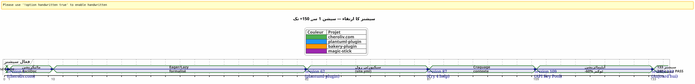
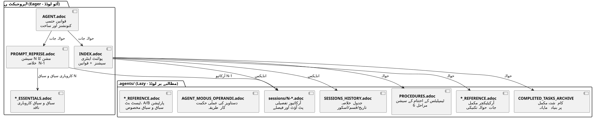

AsciiDoc کے ساتھ ایک AI ایجنٹ کی رہنمائی کرنا: سیاق و سباق کے اخراج (Context Leak) کے بغیر Opencode سیشنز کے لیے میری Eager/Lazy حکمت عملی
شائع شدہ: 24 April 2026
خلاصہ
جب ہم Opencode جیسے ایک AI ایجن کے ساتھ پیچیدہ پروジェکٹس پر مختلف سیشنوں میں کام کرتے ہیں، تو ہم بنیادی مسئلے کا سامنا کرتے ہیں:سیاق و سباق کی لیک. ایجینٹ پچھلی سیشن کا یād نہیں رکھتا۔ جو اس کے بارے میں بتایا گیا — معمار، معاہدات، بیکنگ لاگ کا حال — گم ہو گیا۔ ہر سیشن میں اس سیاق کو بنانا مہنگا، سست اور غلطی کا سبب بن جاتا ہے۔
یہ مضامین میں بنائی ہوئی فنِ دستکاری استراتیجی اس مسئلے کو حل کرنے: مستمر حکمرانی نظام AsciiDoc فائلیں پر مبنی، ایک دوگونی کے ساتھبے صبر/سستکنٹیکسٹ ٹوکن کے استعمال کو بہتر بنانے کے لیے، اور ایکجلسے کے اختتام کی لازمی طریقہ کاراستمراریت کو یقینی بنانے کے لیے۔
سین : سوموار 21 اپریل، 9:00
میں Opencode کو دوبارہ کھول رہا ہوں تا کہ اپنا Gradle پلاگ‑إن دوبارہ چلا سکن`plantuml-plugin`. پری شام میں، میں نے API کلیوں کے pool کی معمارتی ایجنٹ کے ساتھ تین گھنٹے بحث کرنے میں ضائع کیے۔ — round-robin rotation, quota management, خودکار fallback۔ آج صبح، ایجنٹ مجھے سرخ مچھلی کی آنکوں جیسے دیکھ رہا ہے۔
_ ہیلو، میں آپ کا Opencode اسسٹنٹ ہوں۔ آج میں آپ کی کیسے مدد کر سکتا ہوں؟ _
نہیں — آھ ہاں، API کلیوں کا پول، ہم YAML ساخت پر تھے۔ نہیں — خبردار،PlantumlManager`یہ ایک Kotlin singleton object ہے، کلاس نہیں۔ نہیں — نہیں، ہم نے کل فیصلہ کیا کہ`SyntaxValidationResult`ایک sealed nested class میں رہا`PlantumlService.
سب چیز دوبارہ کرنا پڑتا ہے۔ یا بالخصوص : سب چیز کی دوبارہ وضاحت کرنا پڑتی ہے۔ میں اپنی سیشن کے پہلے بیس منٹ Agent کے پاس سے موجود سیاق و سباق کی دوبارہ بنانے میں گزاروں گا۔ بیس منٹ جس میں ٹوکن جل جاتے ہیں۔ بیس منٹ جو میں کوڈ کر سکتا ہوں، لیکن میں مفروض تدریسی کام کر رہا ہوں۔
یہ Opencode کا بگ نہیں ہے۔ یہ مکالمہ کرنے والے LLM ki بنیادی فطرت ہے : دو سیشنز کے درمیان کام کرنے والی یاداشت ہےکاملاً محو. Agent ko pichli mission yaad nahi hai, jis ki le gai faislaye, pehchani gaye jalaaye, hum milkar likha gaya code.
میں نے یہ دسیں بار محسوس کہا۔ چار متزامن پروژیکٹس پر۔ ہفتوں تک جاری رہنے والی سیشنز کے ساتھ۔ میں نے حساب لگایا:عام طور پر،30 سے 40 % سیشن کا وقتیہ ایجنٹ کو دوبارہ سیاق و سباق میں لانے کے لیے وقف تھا۔ پروجیکٹ کی سیشن 87 میں`plantuml-plugin`, میں ٹوٹ گیا۔ میں اب دسویں بار وضاحت کرنے کی اجازت نہیں دے سکتا تھا`AttemptEntry`ایک بالاعدlı ڈیٹا کلاس ہے`DiagramProcessor.kt`.
مجھے ایک نظام درکار تھا۔ یہ ایک ہیک نہیں تھا۔ ایک سچائی حکمرانی۔
Genesis: فوضى سے طریقہ کار تک
پہلی سیشنز : تاریکی دور
اپنا پہلا پروجیکٹ Opencode، کے ساتھ`plantuml-plugin`, کوئی گورننس کے بغیر شروع ہوا۔ میں ایک سوال پوچھتا ہوں، ایجنٹ جواب دیتا ہے، ہم بار بار کرتے ہیں، سیشن ختم ہوتی ہے، اور اگلے دن ہم دوبارہ سے شروع کرتے ہیں۔ یہ سیشن 1 تھی، پھر 2، پھر 3… aż سیشن 62 تک، جہاں میں محسوس کرتا ہوں کہ میں اس معماری کی بار بار وضاحت کرنے کے لِے جما ہوا گھنٹے ضائع کر چکا ہوں۔
سیشن 62 میں، اعداد موجود ہیں :198 یونٹ ٹیسٹس پاس ہو رہے ہیں, 42 تصدیق شدہ فنگشنل ٹیسٹس, پلاگین کام کرتا ہے۔ لیکن شناختی لاگت برداشت نہیں ہو سکتی۔ ہر نئی سیشن بیست منٹ کا مونولوگ سے شروع ہوتی ہے پروجيٹ کی ساخت کے بارے میں۔
سائٹ.yml کا اپیزوڈ متکسر (سیشن 2, bakery-plugin)
طریقہ بھی ایک تباہی سے پیدا ہوتی ہے۔ پروเจکٹ پر`bakery-gradle`, سیشن 2 میں، میں ایجنٹ سے فائل کو ترمیم کرنے کی طلب کرتا ہوں`site.yml`. ایجنٹ، فائل ورژنڈ ہے یا نہیں جانچے بغیر، ایک`Write`مکمل طور پر مواد کو اوورورٹ کر دیتا ہے۔ نتیجہ: حقیقی ٹوکنز (Firebase API کلیدیں، ڈپلوئمنٹ کے راز) جگہ پر جعلی پلیس ہولڈرز سے بدل دیے جاتے ہیں۔ فائل git میں نہیں تھی — وہ`.gitignore`razoun ki hifazat karne.
بے بیکاپ. بے`git restore`ممکن ہے۔ میں رک گیا ہوں۔ مجھے دستی طور پر configuration فائل کو دوبارہ بنانا ہوگا، اپنے پاس ورڈ مینجیمنٹ میں ٹокنز تلاش کرنے ہوں گے، اور سب کچھ دوبارہ جوڑنا ہوگا۔
یہ اس خستگی سے ہوتا ہےمطلق قاعدہ 1b:
_ کبھی نہیں دبانوایک فایل config ساتھ ایک`Write`مکمل جب ایک`Edit`جزی کافی ہےکبھی بدلوا مت کروحساس قیمات جعلی قیمات کے ساتھجائزہ لیں git check-ignore اور `git ls-filesکسی بھی تبدیل سے پہلے. _
یہ قاعدہ، آج میرے تمام فائلوں کے مرمر میں گھری ہوئی`AGENT.adoc` et `INDEX.adoc`چارoprojects پر، یہ ایک حقیقی خطا سے پیدا ہوئی جس نے میرے ایک گھنٹے کے دستیاب کار کی لاگت لی۔
مارک ڈاؤن → آسکی ڈیوک میگریشن (جلسة 1، cheroliv.com)
25 اپریل 2026، پر`cheroliv.com`, میں ایک ریکل فیصلہ لیتا ہوں: مارک ڈاؤن کی governance کو پوری طرح AsciiDoc میں بدل دیتا ہوں۔ یہ خوبصورت نہیں۔ یہ عملی ہے۔ AsciiDoc ایک semantics structure فراہم کرتا ہے جو LLM بہتر سے پڑھتے ہیں: درجہ بندی شدہ حصے, ٹائپڈ ٹیبلز, نوٹس (NOTE, WARNING, CAUTION), مشینی طور پر پڑھنے کے قابل دستاویز کےخصوصیات
سیشن 1 کا`cheroliv.com`ساختہ کی رسمیت دے دیتا ہے :
-
تبدیل کا`AGENTS.md` en
AGENT.adoc -
ویспециализирован ایجنٹس کی تخلیق :`CODER.adoc`,
SCRUM_MASTER.adoc,PLANTUML_DESIGNER.adoc -
ایگر/لیزی کی ساخت کی تخلیق :`INDEX.adoc`,
SESSIONS_HISTORY.adoc,AGENT_SESSION_MANAGER.adoc,SESSION_CHECKLIST.adoc,PROCEDURES.adoc
ایک ہی کامٹ:`90975e9 refactor: migrate agent governance from Markdown to AsciiDoc`. اور سائٹ جاری ہے

اوپر دی گئی ٹائم لائن واقعی پیشرفت کو دکھاتی ہے۔ بٹنگ پوائنٹ سیشن 87 ہے: یہ وہ مقام ہے جہاں بار بار سِیاق و سباق کرنے کی خستگی تساهلی کے حد سے آگے چلی جاتی ہے، اور ایگر/لیزی طریقہ ایک خیال سے بدل کر ضروری بن جاتا ہے۔
استراتژی : Eager/Lazy میں گہرائی
فلسفہ: کش معلوماتی ادراک پر لاگو
میرا طریقہ کمپیوٹر کی کیش مینیجمنٹ سے مستقیماً متاثر ہے۔ سب چیز جومہّم اور بار بار استعمال ہونے والااسے فوراً رسائی حاصل کرنا چاہیےشوقین). سب کچھ جو ہےسیاقاً سے متعلق یا بڑاطلب پر لاڈ کرنا ضروری ہے (سست).
حریص (ڈیش بورڈ) |
Lazy (مالک کا Manual) |
سائز |
< 100 لائن، < 10k ٹوکنز |
لامحدود، تفصیلی |
لوڈ |
آٹو، سیشن کے شروع میں |
ایجنٹ کی درخواست پر |
محتوا |
مطلق قواعد، جاری ماموریت، بحالت بحرانی |
سیشنز کے آرکائیو، مکمل تاریخ، تفصیلی کارروائیاں، ٹیکنیکی حوالہ جات |
رول |
ایجنٹ کو فوراً سمت دیں |
گہرے سیاق و سباق کے سوالوں کا جواب دیں |
ایگر فائلز : ڈیش بورڈ
یہ فائلیں ہر پروجیکٹ کی جڑ پر رہتی ہیں اور ایجنٹ کی طرف سے ہر سیشن کے شروع میں خود بخود لوڈ ہو جاتی ہیں۔ وہ بنتے ہیںڈیش بورڈ-- حتمی معلومات، فوراً قابل رسائی

AGENT.adoc-- مستر فائل. پر`cheroliv.com`، یہ 200 líneas پر مشتمل ہے اور شامل ہے:
-
پروجیکٹ کی مطلق قوانین (اجازت کے بغیرcommit nahi , nahi`rm`تائید کے بغیر)
-
پروجیکٹ کی ساخت اور کوڈ کی کنوینشن
-
ضروری کمانڈ (
./gradlew serve,./gradlew test) -
ایپکس اور پروڈکٹ بیکلاگ (أولویت دی گئی یوزر سториز)
-
متقاطع معیارِ کیفیت (دسترسی، responsive، سازگاری)
پر`bakery-plugin`, قاعدہ 0 مختلف ہے :./gradlew -q publishToMavenLocal` ضروری پس از هر تغییر در کد منبعلوکل JAR کو دوبارہ شائع نہیں کرنے کی وجہ سے پلاگ إن کی ٹیسٹ میں مجھے ایک گھنٹہ خرابکاری دور کرنے میں ضائع ہو گیا، جس کو ابھی تک پیکیج نہیں کیا گیا تھا۔
PROMPT_REPRISE.adoc-- موجودہ سیشن کا مقصد۔ ہر سیشن کے خاتمے پر اپ ڈیٹ کیا جاتا ہے، یہ شامل ہے :
-
سیشن نمبر اور اولویت والی مہم
-
پچھلی سیشن کا خلاصہ (جو کیا گیا، جو باقی ہے)
-
موجودہ سیشن کے قبول کرنے کے معیارات
-
معین تکنیکی یاداشتیں
.agents/INDEX.adocانٹری پونٹ۔ یہ مطلق قوانین، حالیہ سیشنز، اور بالخصوصپروجیکٹ پورٹفلولانہیں ایک جیسے طریقے سے منظم کیا جاتا ہے۔ اب تک، beş پروجيکٹس یہاں فہرست میں شامل ہیں۔
----
----
----
----
| magic-stick | Session 23 | SCRIPT_VERIFICATION.adoc | 2026-04-27 |
| bakery-gradle | Session 11 | TEST_COVERAGE_ANALYSIS | 2026-04-27 |
| cheroliv.com | Session 9 | TEST_COVERAGE_ANALYSIS | 2026-04-27 |
| plantuml-gradle| Session 133| TEST_COVERAGE_ANALYSIS | 2026-04-23 |
| jhipster-gradle-plugins | Session 1 | TEST_COVERAGE_ANALYSIS | 2026-04-28 |
----
آپ ایک پیشہ ور مترجم ہیں۔
فرانسوی سے اردو میں ترجمہ کریں۔
تمام بیک-ٹک کوڈ اسپینز (`...`) کو exact रूप سے محفوظ رکھیں — کبھی بیک-ٹک محتوا، فاصلہ، یا مکان کو بدل نہ دیں۔
یہ متن ایک بڑے جملے کا حصہ ہو سکتا ہے — حصہ کو مزید سیاق و سباق مانگے بغیر ترجمہ کریں۔
صرف ترجمہ شدہ متن خارج کریں — کوئی وضاحت، کوئی ٹिप्पणی، أي परिचय، कोई विकल्प, कोई选项 नहीं۔
**`*_ESSENTIALS.adoc`** -- ایک حالیہ اضافہ (سیشن 109، plantuml-plugin) ایگر context کو مزید بہتر کرنے کیلئے۔ API کلی pole پر 200 لائن بزنس context لوٹنے کی جگہ، میں 50 لائنessential لوڈ کرتا ہوں، اور باقی 150 لائن LAZY میں رہتے ہیں`*_REFERENCE.adoc`.
پیمائش شدہ نتیجہ: انتقال کا**~25k ٹوکنز EAGER سے ~10k ٹوکنز**(60% کا فائدہ). ایجنٹ کو اب زیادہ توانائی کھانے والی یاد دہانے کی ضرورت نہیں ہے۔
==== گم شدہ ربط : `opencode.json
میں آپ سے ایک بات کہنا چاہتا ہوں جو میں نے بالکل بھول ہی گیا تھا دستاویز کرنے کی۔ اس سے اوپر تمام .adoc فائلوں میں ایک چھوٹا سا JSON فائل ہے جس کے بغیر کوئی چیز کام نہیں کرتی۔ اس کا نام`opencode.json`اور یہ چھ لکیریں بنتا ہے۔ حرفی طور پر چھ لکیریں۔
[source,json]
----
{
"$schema": "https://opencode.ai/config.json",
"instructions": [
"AGENT.adoc"
]
}
----
یہ فائل Opencode کو بتاتی ہے: «ابٹاپ پر، لوڈ`AGENT.adoc`خودکار طور پر. » اس کے بغیر، ایجنٹ ایک خالی صفحہ ہے بالضرورت جس طرح میں نے مضمون کے ابتداء میں بیان کیا تھا۔ اس کے ساتھ، ایجنٹ پہلے سے ہی اپنے ہاتھوں میں مطلق قواعد، پروجیکٹ کی معماری، اور ضروری ہدایات — حتی سے پہلے کہ میں سلام کہوں۔
میں نے اس فائل کی اہمیت اتفاقاً پائی۔ پر`bakery-plugin`، یہ موجود نہیں تھا۔ میں یہ سوچ رہا تھا کہ کیوں ایجنٹ نظامی طور پر اس پروجي پر دوستان پر سے زیادہ «بھولے ہوئے» تھا۔ مطلق reglas خوب تھے میں`AGENT.adoc`— لیکن`AGENT.adoc`یہ کبھیлярڈ نہیں کیا گیا۔ ایجنٹ صرف وہی پڑھتا تھا جو میں نے اسے پڑھنے کے لئے کہا، دستی طور پر، ہر سیشن میں۔ یہ سیشن 11 کا`bakery-plugin`جب میں née ki عدم موجودگی محسوس קי`opencode.json`. main ne ise bananaa — aur session 12 shuru hui dusron jaisa.
یہ فائل ابھی مجھے اتنا واضح ہے کہ میں اس کے بارے میں سوچتا بھی نہیں تھا۔ یہ ڈویلپر کی ایک عام غلطی ہے جو اپنی آلہ کو زیادہ جانتا ہے۔ آج، میں اس کو منظم طور پر *avant* بناتا`AGENT.adoc`یہ پہلا پتھر ہے۔
==== INDEX.adoc` کی دُوئتی
ایک اور باریک بات جو واضح کرنے کے قابل ہے :`INDEX.adoc`رہتا ہے`.agents/`— ایک فائل جو میں LAZY کے طور پر پیش کر چکا ہوں۔ تاہم، میں اسے تمام ٹیبلز میں EAGER کے طور پر فہرست کرتا ہوں۔ یہاں واضح طور پر ایک تنازع موجود ہے۔
میدانی حقیقت : فائلیں`.agents/INDEX.adoc`سیشن کے شروع میں خود بخود بہت اچھی طرح لوڈ ہو جاتے ہیں , جسے`AGENT.adoc` et `PROMPT_REPRISE.adoc`. وہ داخل ہیں`.agents/`تنظيماتی وجوہات — جڑ پر حملہ نہ کریں — لیکن ان کا سلوک EAGER ہے۔
پر`plantuml-plugin`, `INDEX.adoc`یہ 200 لائن پر مشتمل ہے اور شامل ہے مطلق قوانین *مکمل* کے ساتھ ان کا تاریخچہ (گذشتہ سیشنوں کے سیکھ)، EPICs کے ساتھ اسکور، اور پروجيكتس کا پورٹ فولیو۔ یہ وہ دستاویز ہے جو ایجنٹ دیکھتا ہے تا کہ جانے « ہم کہاں کھڑے ہیں »۔ پر`bakery-plugin`, یہ 150 لائنوں بناتا ہے روڈ میپ اور حالیہ سیشنز کے ساتھ۔
خود اختیاری redundancy کے درمیان`AGENT.adoc` et `INDEX.adoc`حیرت انگیز ہو سکتا ہے۔ مطلق قوانین دونوں میں موجود ہیں۔ کیوں؟ کیونکہ ان کے دو مختلف وظائف ہیں: میں`AGENT.adoc`, وہ ہیں *وضاحتی* (قاعدے کی کہانی، سیکھنا) ; میں`INDEX.adoc`, وہ *مفوضہ* ہیں (ننگا قانون، بلا وجوہ، تیز مشورہ کے لئے). ایجنٹ پڑھتا ہے`AGENT.adoc`ایک بار *سمجھنا* کے لیے؛ وہ دوبارہ پڑھتا ہے`INDEX.adoc`ہر سیشن کے لئے *لاگو کرنا*. دو استعمال، دو فارمٹ۔
[plantuml, format=svg, id=diag-dualite-agent-index, alt="Comparaison entre AGENT.adoc (narratif) et INDEX.adoc (exécutif)"]
----
@startuml
skinparam backgroundColor #FEFEFE
skinparam defaultTextAlignment center
title دولیتی AGENT.adoc ←→ INDEX.adoc
left to right direction
rectangle "AGENT.adoc\n(جڑ — EAGER)" as AGENT #E3F2FD {
rectangle "📖 **روایتی شکل**\nقاعدہ کی کہانی\nسیکھا گیا سیک، سیاق" as NARR
rectangle "🏗️ **مکمل معماری**\nپروجیکٹ کی سٹرکچر، اجزاء\nبیکلاگ تفصیلی US" as ARCHI
rectangle "📋 **وضاحت کے قواعد**\nکیوں قاعده موجود ہے\nواقعہ کی تاریخ" as EXPL
}
rectangle "INDEX.adoc\n(.agents/ — EAGER)" as INDEX #E8F5E9 {
rectangle "⚡ **تنفيذی فارمیٹ**\nننگا قاعدہ، بے وجوہ\nجلدی مشاورت" as EXEC
rectangle "📊 **Roadmap & EPICs**\nجدول خلاصہ\nترقی، اسکور، اہمیت" as ROAD
rectangle "🌐 **پروجیکٹس کا پورٹ فولیو**\nعرض عام\n5 ہم آہنگ پروجيٹس" as PORT
}
AGENT --> INDEX : "Agent lit AGENT.adoc\n1 fois pour **سمجھنا**"
INDEX --> AGENT : "ایجنٹ INDEX.adoc کو دوبارہ پڑھتا ہے\nہر سیشن کے لیے **لاگو کرنا**"
note bottom of AGENT
Taille max : 200 lignes
end note
note bottom of INDEX
Taille max : 200 lignes
Source de vérité en cas de divergence
end note
@enduml
----
یہ مفروض شدہ redundant (یا redundant) designing ka ikhtiyar ہے۔ یہ ~50 اضافی خطوط EAGER tokens ki kharch karti hai — lekin yeh guarantee karti hai ke agent ko hamesha rules nazar aati rahein, mukhtasir format mein bhi jo furi tameel ko asan banaata hai۔
=== LAZY فائلیں : مالک کا منوال
یہ فائلیں رہتی ہیں`.agents/`و ان صرف پڑھے جاتے ہیں جب ایجنٹ ان کی ضرورت محسوس کرتا ہے۔ وہ طریقے کی سچائی دولت بناتے ہیں، کیونکہ وہ پروجيکٹ کی علم کو جمع کرتے ہیں حالیہ سیاق کو آلودہ کیے بغیر۔
[plantuml, format=svg, id=diag-agents-tree, alt="Arborescence complète du dossier .agents/"]
----
@startuml
skinparam folderBackgroundColor #E3F2FD
skinparam folderBorderColor #1565C0
skinparam fileBackgroundColor #FFF3E0
skinparam fileBorderColor #EF6C00
folder ".ایجنٹس/" as ROOT {
file "INDEX.adoc\n(EAGER -- 200 لائنوں)" as IDX #E8F5E9
file "AGENT_SESSION_MANAGER.adoc\n(ٹیبلٹ سیشن)" as ASM
file "کب تبدیل کریں" as CHK
file "PROCEDURES.adoc\n(6 مراحل + LAZY/EAGER)" as PRO
file "SESSIONS_HISTORY.adoc\n(تمام سیشنز)" as HIS
folder "سیشن/" as SESS {
file "1-chore-migration.adoc" as S1
file "109-formalisation-lazy.adoc" as S109 #FFECB3
file "133-epic11-article.adoc" as S133
file "... +130 دوسرے" as SMORE
}
folder "محفوظات/" as ARCH {
file "COMPLETED_TASKS_2026-04.adoc" as CTA
file "SESSIONS_HISTORY_83-95.adoc" as SHIST
folder "جلسات خلاصات/" as SUM {
file "SESSION_64_SUMMARY.adoc" as SU64
file "SESSION_73_SUMMARY.adoc" as SU73
file "..." as SUMORE
}
folder "prompts_archive/" as PARCH {
file "PROMPT_REPRISE_S65.adoc" as PR65
file "PROMPT_REPRISE_S75.adoc" as PR75
file "..." as PMORE
}
}
}
IDX --> SESS : "انڈیکس کرتا ہے"
IDX --> HIS : "انڈیکس کرتا ہے"
IDX --> ARCH : "حوالہ"
note right of S109
Session 109 =
Formalisation stratégie
LAZY/EAGER
Token : ~25k → ~10k
end note
@enduml
----
اوپر کی شجرہ folder کی حقیقی ساخت دکھاتی ہے`.agents/`پر`plantuml-plugin`, سب سے زیادہ بالغ پروجیکٹ. تین طبقات کی گہرائی ملاحظہ کریں: جڑ فائل (میتا ڈیٹا), فوڈر`sessions/`(تاریخی کے حسب آرکاؤ), اور فائل`archives/`(جمع اور خلاصات). یہ گہرائی ہے جو ایک سادہ TODO فائل کی حکمرانی کو تبدیل کرتی ہے ایک**مکمل تنظیمی یاداشت**.
**.agents/sessions/{N}-{titre}.adoc**-- ہر سیشن کے تفصیلی آرکیو. موجودہ طور پر:
* `plantuml-plugin`:**133 جلسات محفوظ**(سیشن 1 سے 133 تک)
* `bakery-plugin`:**11 سیشن**
* `magic-stick`</think>**23 سیشن**
* `cheroliv.com`:**9 رسمی سیشن**+ 7 سیشنوں پیش‑نظام کی تجدید واپس اثر میں
ہر آرمش میں سیشن کا مکمل سیاق، لیے گئے فیصلے، سامنے آنے والی مشکلات اور ان کا حل، چلائے گئے کمانڈ اور ان کا آؤٹ پٹ شامل ہوتا ہے۔
**.agents/SESSIONS_HISTORY.adoc**-- ہر سیشن کے اسکور کے ساتھ خلاصہ جدول. مثال پر`cheroliv.com`:
----
| -6 | 2025-05 | chore | Initialisation projet Gradle/JBake | 7/10 | 1 | 2026-04-25 | chore | Migration gouvernance agent | 8/10 | 7 | 2026-04-27 | debug/fix | Correction publishSite | 9/10 | 8 | 2026-04-27 | analyse | Analyse article 0108 | 7/10
**.agents/COMPLETED_TASKS_ARCHIVE_{mois}.adoc**-- مکمل ہونے والی کاروں کو ماہانہ آرکائیو کر کے، فعال backlog کو overload نہیں ہونے دیا جاتا۔ جب کوئی user story مکمل ہو جاتی ہے، تو یہ یہاں منتقل ہوتی ہے۔ بیکلاگ پڑھنے میں مناسب رہتا ہے: زیادہ سے زیادہ 10 فعال items۔
**.agents/PROCEDURES.adoc**-- تفصیلی ٹیمپلیٹس سیشن کے اختتام کے عمل کا. لمبا، لیکن ایک بار ہی پڑھا جاتا ہے جب ایجنٹ طریقہ سیکھتا ہے۔ بعد میں، عمل خودکار بن جاتا ہے۔
**.agents/AGENT_MODUS_OPERANDI.adoc**-- دستاویز استراتژیکی مکمل. پر`plantuml-plugin`، یہ فائل کرتا ہے**900+ سطرات**اور اس کا اصل نام`AGENT_METHODOLOGIES.adoc`— میں نے اس مضمون کی لکھائی اور مؤثر تنفیذ کے درمیان نام بدلایا۔ اس قسم کا naming کا تفریق ایک پیشہ وران نظام میں unavoidable ہے جو آگے بڑھ رہا ہے۔مهم بات نام کی معاہدہ یہ ہے: اگر فائل *طریقہ* کو وضاحت دے، تو یہ ...`AGENT_`یا ایک صریح پیشوند۔ یہ Eager/Lazy ميثودولوجي کو دستاویزی کرتا ہے، پیروی کرنے کے پٹرن، سے بچنے کے ضد‑پٹرن۔ یہ LAZY ہے کیونکہ ایک ایجنٹ کو ہر سیشن میں مکمل حکمت عملی دوبارہ پڑھنے کی ضرورت نہیں ہوتی، صرف جب ابهام ہو۔
**`*_REFERENCE.adoc`** -- پروجیکٹ کے مخصوص تکنیکی حوالے. پر`magic-stick`, دو گھن LAZY فائلیں :
* `AB_PARTITION_REFERENCE.adoc`(147 líneas) -- A/B GPT پارٹیشن کی معماری، اسکرپٹس`update-system.sh`, متوقع سائیز, میکانیزم Rollback
* `BOOT_TEST_REFERENCE.adoc`(144 سطر) -- QEMU + VNC کی طریقہ ISO کے بوٹ کا ٹیسٹ کرنے کے لیے، کسی مادی ہارڈ وئیر کے بغیر، BIOS/UEFI چیک لسٹ، CI/CD کی محدودیاں
بر`plantuml-plugin`:
* `ARCHITECTURE.adoc`(134 سطر) -- 11 ڈیٹا کلاسوں کی ساخت، توجہ کے نکات (بچنے کے لیے پھنگے)، منظّم شدہ ٹیسٹ کمانڈز
* `API_KEY_POOL_REFERENCE.adoc`-- کلید پول کے مکمل تفصیلات (LAZY جبکہ`ESSENTIALS`ہے EAGER)
== متخصص ایجنٹس : ایک وایچرل ٹیم
حکمرانی صرف passive فائلوں تک محدود نہیں۔ میں نے کچھ کو رسمی بنایا ہے**خُصُوصِی ایجنٹوں کے کردار**مخصوص LAZY فائلوں میں، جو کام کے نوع کے مطابق متوقع کام کاپروسس کو علىاہ karte hain.
|===
|ایージェンٹ |فائل |نقش |پروجیکٹ |**کوڈ کرنا** |`CODER.adoc` |FTL/CSS/JS کی پیاده سازی، سمانٹیک ٹیگز، رسائی کے معیارات |cheroliv.com |**اسครام مايستر** |`SCRUM_MASTER.adoc` |منصوبہ بندی US, چھوٹی کاموں میں تقسیم, انحصارات کا تشخیص |cheroliv.com |**PlantUML ڈیزائنر** |`PLANTUML_DESIGNER.adoc` |ڈایگرام بنانا، PUML سینٹکس، JBake کی ایکپلیکیشن |cheroliv.com
|===
فائل`CODER.adoc`پر`cheroliv.com`ملموسی قواعد : _ایک`<h1>`ہر page_, _پREFIX ان راستوں کے ساتھ`${content.rootpath}`_, _زبان کا اعلان کریں`<html lang="${content.lang!"fr"}">`_. یہ معاہدات، ایک بار لکھ دیے گئے، سیشن 1 سے ایجنٹ tarafından خود بخود احترام کیے جاتے ہیں۔
فائل`SCRUM_MASTER.adoc`یہ ڈلیوریبل کا بناؤ لگاتا ہے :**هدف**, **کاموں**(assignment کے ساتھ مختصات),**قبول کے معیار**, **خطرات**.جب میں عمل کی منصوبہ مانگتا ہوں، تو ایجنٹ یہ ڈھانچہ بناتا ہے، مجھے اسے مانگنے کے بغیر. الحکمرانی**برنامج**اےجنٹ.
==== جب مخصوص ایجنٹس ضروری بن جاتے ہیں
مخصوص ایجنٹوں کی تخلیق ایک فطری منحنی پیروی کرتی ہے۔ پروЈیکٹ کے ابتداء میں، آپ اس کی ضرورت نہیں ہوتی۔`AGENT.adoc`بہت کافی ہے. لیکن جب پروجت بڑھتا ہے (سمجھیں، 20 سیشنز سے زیادہ)، دو سیگنال آپ کو آگاہ کریں گے :
1. ایجن دو مختلف شعبوں کی معاہدے ملطات کرتا ہے (مثلاً PlantUML کی سائنٹکس اور CSS کے قوانین)
2. آپ ایجنٹ کو ان conventions پر ٹھیک کرنے میں پہلے سے سمجھائے گئے 5 بار سے زیادہ وقت گزار رہے ہیں۔
پَر`cheroliv.com`, یہ سیشن میں پہنچ گیا... 1. ہاں، شروع سے۔ کیونکہ یہ پروجيکٹ ايک ویب سائٹ ہے تین زبانوں (FTL, CSS, JS) کے ساتھ، AsciiDoc محتوا، اور PlantUML diagram — تین مجالات جو 서로 سے تعلق نہیں رکھتے۔ CODER ایجنٹ کو فونٹ کے سائز اور میڈیا کوئریوں کے بارے میں جاننا چاہیے؛ PLANTUML_DESIGNER ایجنٹ کو سینٹیکس کے بارے میں جاننا چاہیے۔`@startuml`. بغیر جدائی کے، ایجنٹ CODER مجھے ڈائیگرام پیش کر رہا تھا، اور برعکس۔ یہی بےترتیبی تھی
پر`jhipster-gradle-plugins`, میں دو مخصوص ایجنٹ بنائے ہیں جو Gradle پلاگنز کی ترقی کے لیے موزوں ہیں :`PLUGIN_DEVELOPER.adoc` et `BACKLOG_MANAGER.adoc`. پہلا Kotlin/Gradle ki tamam qawanīn encode karta hai (nahin`!!`، ڈیٹا کلاسز مودلز کے لیے،`@TaskAction`کاموں کے لیے) دوسر جانتا ہے کہ`persistence`اسے پہلے سے مستحکم ہونا چاہیے`assistant`اس کی ترقی شروع نہیں ہوتی — مونو-ریپو میں ایک حتمی انحصار.
غلطی جو نہیں کرنی چاہیے: جلد جلد زیادہ ایجنٹس بنانا۔`plantuml-plugin`انتظر جلسہ 108 قبل فارمائل کرنا ایک مخصوص ایجنٹ API کلیوں کے پول کے لیے. اس سے قبل، کاروباری سیاق موجود تھا`AGENT.adoc`عاملی قاعدہ : ایک مخصوص عامل اپنی وجھت ثابت کرتا ہے جب اس کا حَرفہ 100 لائنز وثائق سے زیادہ ہو جائے۔
==== سیشنز کی نامگذاری کی معاہدہ
ایک تفصیل جو بے اہم نکلتی ہے لیکن جب 100 سیشن تک پہنچتے ہیں تو حتمی بن جاتی ہے۔ آرکائف فائلوں کا نام کیا رکھیں؟
میں نے مشقت سے سیکھا کہ ایک معاہدہ ضروری ہے — چار پروجيکٹس، چار مختلف فارمٹس شروع میں، اور میں ان سے مطابقت نہیں رکھ سکتا تھا. آج، وہ معاہدہ جو میں نے مستحکم کیا ہے، یہ ہے:
----
{N}-{type}-{sujet-kebab-case}.adoc
ملموس مثالیں :
* `1-chore-migration-gouvernance-agent.adoc`— سیشن 1، قسم کا کام
* `10-solidification-tests.adoc`— سیشن 10، بغير صریح ٹائپ (موضوع کافی ہے)
* `036-debug-graphify-symlink-epic9.adoc`— سیشن 36 ساتھ تین انک والا شُمارہ سرت کرنے کے لیے
سیشن نمبرز سٹائننگ کے اصلی معیار ہیں۔ جس پروژیکٹس تین رقمی نمبر (001, 036, 133) استعمال کرتے ہیں، وہ 99 سے اوپر جانے پر لیکسیوگرافک سٹائننگ کے مسائل سے بچتے ہیں۔ یہ وہ ہے جو اب میں استعمال کرتا ہوں پر`magic-stick` : `001-init-projet.adoc`, `036-debug-graphify-symlink-epic9.adoc`.
قسم اختیاری ہے اور سیشن کے کی ورڈز سے مشتق ہے (debug, feature, refactor, docs, chore, test). kebab-case میں موضوع اہم حصہ ہے: یہ فائل کھولے بنائے بِلَا سیشن کو ڈھونڈنے کی اجازت دیتا ہے۔ اگر آپ سوچ رہے ہیں « کون سی سیشن تھی جس میں ہم نے انٹیگریٹنگ ٹسٹز کے ٹائم آؤٹ کو درست کیا تھا؟ », تو جواب ہے`124-fix-timeout-integration-test.adoc`.
بنیاد شدہ تاریخی جلسات (حکمرانی سے پہلے پیدا ہونے والے پروژیکٹس) کے لیے، من منفی نمبرز۔ Sur`cheroliv.com`, جلسات -6 سے 0 تک پروเจкт کی مکمل پیش‑حکومت تاريخ کو 덮تی ہیں۔ اور جلسات « غیر مستند » یا ضائع کے لیے، میں ایک انٹری بناتا ہوں`SESSIONS_HISTORY.adoc`مطابق آرکائیو نہیں، ایک اسکور کے ساتھ`?`. یہ pretend کرنے سے زیادہ ایماندار ہے۔
[plantuml, format=svg, id=diag-naming-convention, alt="Arbre de décision pour le nommage des fichiers de session"]
----
@startuml
skinparam backgroundColor #FEFEFE
skinparam defaultTextAlignment center
skinparam wrapWidth 200
title سیشن نامنگ کنوانیشن
start
:Une session se termine;
note right: Trigger "سیشن کا اختتام"
if (Session antérieure\nà la gouvernance ?) then (oui)
:Numéro **NÉGATIF**\n-6, -5 ... 0;
note right: Historique\nreconstitué
:Suffixe : reconstitution;
else (non)
:Numéro **POSITIF**\nsur 3 chiffres si > 99;
note right: 001, 036, 133\npour le tri lexicographique
:Détecter le **TYPE**;
if (Mots-clés trouvés ?) then (oui)
:debug / feature / refactor\ndocs / chore / test;
else (non)
:Omettre le type\n(le sujet suffit);
endif
:Formuler le **SUJET** en kebab-case;
note right
Ex: fix-timeout-integration-test
Doit permettre de retrouver
sans ouvrir le fichier
end note
endif
:Nom final : {N}-{type}-{sujet}.adoc;
note right
• 1-chore-migration-gouvernance.adoc
• 036-debug-graphify-symlink.adoc
• 124-fix-timeout-integration-test.adoc
• 133-epic11-article-blog-kg.adoc
end note
if (Session documentée ?) then (oui)
:Créer archive dans sessions/;
:Ajouter ligne SESSIONS_HISTORY\navec score X/10;
else (non)
:Ajouter ligne SESSIONS_HISTORY\navec score **?**\n**sans archive**;
note right: L'honnêteté\nplutôt que le vide
endif
stop
@enduml
----
==== TEST_COVERAGE_ANALYSIS.adoc` — مرحلہ 5 تفصیلی
سیشن کے اختتام کے عمل کا درجہ 5 سب سے زیادہ مبہت ہے۔ یہ کہا «آپ ڈیٹ کریں»۔`TEST_COVERAGE_ANALYSIS.adoc`اگر ٹیسٹس شامل یا معیار میں بدلے گئے ہوں۔ » لیکن یہ فائل کیسے دکھائی دیتا ہے؟
پر`plantuml-plugin`, یہ کئی سطروں سے شروع ہو کر ایک مکمل ساخت تک پہنچ گیا۔ یہ اس کی مستحکم شکل ہے :
[source]
----
= Analyse de Couverture de Tests
== Suivi des Tests
|===
| Classe de test | Type | Tests | Statut | Dernière MAJ
| PlantumlServiceTest | unit | 45/45 | ✅ PASS | 2026-04-23
| ApiKeyPoolTest | integration | 15/15 | ✅ PASS | 2026-04-20
|===
== Historique par Session
| Session | Tests ajoutés | Tests modifiés | Couverture
| 133 | 0 | 2 | 100%
| 132 | 5 | 0 | 100%
|===
----
دلچسپی خود فائل ہی نہیں — یہ فائل کو *noter* کرنے کی ذمّہ ہے جو بدل گیا ہے۔ اس مرحلے کے بغیر، 50 سیشن کے بعد آپ جانете نہیں ہیں کون سے ٹیسٹ کیا cover کرتے ہیں۔ ایجنٹ بھی نہیں۔ فائل منصوبے کی ٹیسٹ کی covering کا ایکلا سچائی کا وسائل بن جاتا ہے۔
روایتی ٹیسٹ کے بغیر پروژوں کے لئے (جیسے`magic-stick`جو بش اسکریپٹس ٹیسٹ کرتا ہے) , قدم 5 بدل دیا جاتا ہے`SCRIPT_VERIFICATION.adoc`. مکانیزم ایک جیسا ہے: ایک فائل جو اسكريپٹس کی تصدیق کی حالت کی نظارت کرتی ہے۔ اپنی پروجیکت کے مطابق قدم 5 کو ترتیب دیں، لیکن کبھی بھی اسے چھوڑیں نہیں۔ یہ محفوظی جالے کی طرح ہے جو خاموش واپسی کو روکتی ہے۔
[plantuml, format=svg, id=diag-dualite-agent-index, alt="Comparaison entre AGENT.adoc (narratif) et INDEX.adoc (exécutif)"]
----
@startuml
skinparam backgroundColor #FEFEFE
skinparam defaultTextAlignment center
title دوہرا پن `AGENT.adoc` ←→ `INDEX.adoc
left to right direction
rectangle "AGENT.adoc`\n(Root — EAGER)" as AGENT #E3F2FD {
rectangle "📖 **بیانیہ فارمیٹ**\nاصول کی کہانی\nسیکھا گیا سبق، سیاق و سباق" as NARR
rectangle "🏗️ **مکمل آرکیٹیکچر**\nپروجیکٹ کا ڈھانچہ، اجزاء\nتفصیلی US بیک لاگ" as ARCHI
rectangle "📋 **وضاحتی قوانین**\nاصول کیوں موجود ہے\nواقعے کی تاریخ" as EXPL
}
rectangle "`INDEX.adoc`\n(.agents/ — EAGER)" as INDEX #E8F5E9 {
rectangle "⚡ **ایگزیکٹو فارمیٹ**\nصرف اصول، بغیر کسی جواز کے\nتیز رفتار مشاورت" as EXEC
rectangle "📊 **روڈ میپ اور EPICs**\nخلاصہ ٹیبل\nپیش رفت، اسکور، ترجیح" as ROAD
rectangle "🌐 **پروجیکٹ پورٹ فولیو**\nکراس ویو\n5 ہم آہنگ پروجیکٹس" as PORT
}
AGENT --> INDEX : "ایجنٹ `AGENT.adoc` پڑھتا ہے\n**سمجھنے** کے لیے 1 بار"
INDEX --> AGENT : "ایجنٹ `INDEX.adoc` دوبارہ پڑھتا ہے\n**لاگو کرنے** کے لیے ہر سیشن میں"
note bottom of AGENT
زیادہ سے زیادہ سائز: 200 لائنیں
end note
note bottom of INDEX
زیادہ سے زیادہ سائز: 200 لائنیں
Source de vérité en cas de divergence
end note
@enduml
----
[plantuml, format=svg, id=diag-session-flow, alt="Flux d'une session type avec Eager/Lazy et agents"]
----
@startuml
skinparam backgroundColor #FEFEFE
start
:Début session;
note right: L'agent est une page blanche
:Chargement EAGER auto;
note right
* AGENT.adoc (règles absolues)
* PROMPT_REPRISE.adoc (mission N)
* INDEX.adoc (état projet)
end note
if (Mission claire ?) then (oui)
:Exécution directe;
else (non)
:Charge LAZY sur demande;
note right
* SESSIONS_HISTORY.adoc (contexte passé)
* sessions/{N-1}-*.adoc (décisions)
* *_REFERENCE.adoc (architechture)
end note
endif
:Délégation agent spécialisé ?;
if (CODER ?) then (oui)
:Lit CODER.adoc;
:Suit conventions FTL/CSS;
elseif (SCRUM Master ?) then (oui)
:Lit SCRUM_MASTER.adoc;
:Structure livrable imposée;
elseif (PlantUML ?) then (oui)
:Lit PLANTUML_DESIGNER.adoc;
:Syntaxe PUML + intégration;
else (non)
endif
:Travail de la session;
:Fin de session (trigger utilisateur);
:Procédure 6 étapes;
note right
1. Archive sessions/N-*.adoc
2. Maj PROMPT_REPRISE.adoc (N+1)
3. Maj SESSIONS_HISTORY.adoc
4. Maj INDEX.adoc
5. Maj TEST_COVERAGE (si applicable)
6. Maj COMPLETED_TASKS_ARCHIVE.adoc
end note
:Checklist [✅] x 6;
stop
@enduml
----
اوپر کا ڈائیگرام ایک سیشن کا مکمل زندگی چکر دکھاتا ہے۔ اہم نقطہ EAGER لوڈ کے بعد دو شاخوں میں تقسیم کرنے کا ہے: یا تو مہم کافی واضح ہے تاکہ مستقیم طور پر عمل کیا جا سکتا ہے (80% przypad)، یا ایجنٹ LAZY لوڈ کرکے مبہم کو حل کرتا ہے (20% przypad)۔ یہ فرق ہی ٹوکنز بچاتا ہے۔
== سیشن کے اختتام کا طریقہ کار : سونے کا قاعدہ
[plantuml, format=svg, id=diag-agents-tree, alt="Arborescence complète du dossier .agents/"]
----
@startuml
skinparam folderBackgroundColor #E3F2FD
skinparam folderBorderColor #1565C0
skinparam fileBackgroundColor #FFF3E0
skinparam fileBorderColor #EF6C00
folder ".agents/" as ROOT {
file "INDEX.adoc\n(EAGER -- 200 لائنیں)" as IDX #E8F5E9
file "AGENT_SESSION_MANAGER.adoc\n(سیشن ٹیمپلیٹ)" as ASM
file "SESSION_CHECKLIST.adoc\n(کب تبدیل کرنا ہے)" as CHK
file "PROCEDURES.adoc\n(6 مراحل + LAZY/EAGER)" as PRO
file "SESSIONS_HISTORY.adoc\n(تمام سیشنز)" as HIS
folder "sessions/" as SESS {
file "1-chore-migration.adoc" as S1
file "109-formalisation-lazy.adoc" as S109 #FFECB3
file "133-epic11-article.adoc" as S133
file "... +130 مزید" as SMORE
}
folder "archives/" as ARCH {
file "COMPLETED_TASKS_2026-04.adoc" as CTA
file "SESSIONS_HISTORY_83-95.adoc" as SHIST
folder "sessions_summaries/" as SUM {
file "SESSION_64_SUMMARY.adoc" as SU64
file "SESSION_73_SUMMARY.adoc" as SU73
file "..." as SUMORE
}
folder "prompts_archive/" as PARCH {
file "PROMPT_REPRISE_S65.adoc" as PR65
file "PROMPT_REPRISE_S75.adoc" as PR75
file "..." as PMORE
}
}
}
IDX --> SESS : "انڈیکس"
IDX --> HIS : "انڈیکس"
IDX --> ARCH : "حوالہ"
note right of S109
سیشن 109 =
حکمت عملی کی فارمیلیشن
LAZY/EAGER
ٹوکن : ~25k → ~10k
end note
@enduml
----
Is tarah ki procedure ke bina, Eager/Lazy strategy koi fayda nahi deti. Yeh hei jo session ka kaam daimi information mein badal deti hai. Yeh chal rahi hai.**استعمالکن کی صریح طلب پر**(کلیدی الفاظ: "سیشن کا اختتام", "میں چھوڑ رہا ہوں", اغیرہ), اور یہ ہے**لازمی**-- کوئی استثنا نہیں، کوئی ناپوری نہیں.
فائل`SESSION_CHECKLIST.adoc`مثالية سیشن میٹرکس کی تعریف کرتا ہے :
* مدت: 15-30 منٹ
* مُعَدّل فائلز: 1-3 حد اعلی
* LLM تبادل : 5-10 پیامات
* python
import sys
def main(): data = sys.stdin.read() sys.stdout.write(data)
if __name__ == '__main__': main()
اور niektó اشارات جسکی سション بدلنے کی ضرورت ہے : _LLM پہلے سے معدل غلطیات کو دوھراتا ہے_ , _3 سے زیادہ متراکب معدل فائلين_ , _باتچیت > 50 مسجعين_ . سنہری قانون :**بہتر ہے 20 منٹ کی 5 سیشن، 2 گھنٹے کی ایک سیشن سے جس میں بےترتیب ڈی بیگنگ ہو۔**
=== ۶ مراحل کا بہاؤ (خاموشی سے)
[plantuml, format=svg, id=diag-end-session-flow, alt="Flux de la procédure de fin de session"]
----
@startuml
skinparam defaultTextAlignment center
skinparam wrapWidth 200
skinparam activityBackgroundColor #E3F2FD
start
:L'utilisateur dit "سیشن کا خاتم";
note right: Mots-clés déclencheurs
:Agent détecte le trigger;
:Étape 1\nCréer archive\n`.agents/sessions/N-*.adoc`;
note right: Tout le contexte de la session
:Étape 2\nMettre à jour\n`PROMPT_REPRISE.adoc`;
note right: Mission N + critères d'acceptation N+1
:Étape 3\nMettre à jour\n`SESSIONS_HISTORY.adoc`;
note right: Ligne récap : # / Date / Type / Sujet / Score
:Étape 4\nMettre à jour\n`INDEX.adoc`;
note right: État courant, roadmap, fichiers modifiés
:Étape 5\nMettre à jour\n`TEST_COVERAGE_ANALYSIS.adoc`;
note right: Si tests ajoutés ou modifiés
:Étape 6\nMettre à jour\n`COMPLETED_TASKS_ARCHIVE.adoc`;
note right: Archiver tâches terminées
:Afficher la checklist de confirmation;
note right: Vérifier que chaque [✅] est mérité
stop
@enduml
----
=== 150+ سیشنز کے نتائج
یہ وہ نتیجہ ہے جو یہ عمل، منظم طور پر استعمال ہونے پر، میرے چار پروجیکٹس پر دیتا ہے :
**پیلنتوملل-پلاگین**:
* **133 جلسات**پروجیکٹ کے آغاز سے
* **240/240 امتحانات کامیاب**(100% کوریج) -- EPICs 1-7 مکمل
* **57 سیناریو Cucumber BDD**مصدق شدہ
* حفاظت کا قاعدہ کنفیگ فائلوں پر، ایک واقعی غلطی سے پیدا ہوا (Session 2 bakery-plugin)
**بییکری-پلاگائن**:
* **١١ سیشنز**دوس ہفتوں میں
* Supabase → Firebase کی میگریشن مکمل (9 ٹیسٹس درست)
* EPIC 6 (publishProfile) production میں فعال
* قاعدہ 0 بنائی گئی :`publishToMavenLocal`ہر اصلاح کے بعد فرض
**جادو کی چھڑی**:
* **23 جلسات**ایبونتو لائیو سسٹم بنانے کے لیے ای/بی پارٹیشن کے ساتھ
* سیشن 10 میں پہلی ISO تیار کی گئی
* QEMU + VNC کے بوٹ کے رسمی ٹیسٹ (LAZY دستاویز 144 لائن)
* CI/CD SourceForge عامِل
**cheroliv.com**[No output]
* **9 رسمی جلسات**+ 7 پیش‑نظام سیشنز کی بازسازی
* ماده 0101 (OpenCode PATH) شائع
* مضمون 0108 (یہ) اس کے نقصانات کا تجزیہ کرنے کے بعد دوبارہ لکھا گیا
* مکمل حکمرانی مارک ڈاؤن سے AsciiDoc تک منتقل کی گئی
=== آخری چیک لسٹ
6 مراحل کی خاموش اجرا کے بعد، ایجنٹ کو تصدیق کی چیک لسٹ دکھانی ہوگی :
✅ Procédure de fin de session exécutée 📋 Checklist :
**مطلق قانون**: کوئی مرحلہ نشان نہیں کیا جا سکتا`[✅]`اگر فائل واقعیً بدل نہیں گئی اور تصدیق نہیں گئی۔
== بٹ سٹراپ گائیڈ: دن 1, سیشن 0
آپ طریقے سے مقتنے ہیں۔ آپ اسے نئی پروژے پر لاگو کرنا چاہتے ہیں۔ کahan سے شروع کریں؟
میں نے یہ لمحہ 28 اپریل 2026 کو گزاریا۔ میں Opencode کھول رہا ہوں پر`jhipster-gradle-plugins`, mérā mono-repo do Gradle JHipster plāginz kā. یہ ایک پراجیکٹ ہے جو پہلے سے موجود ہے — کوڈ حاضر ہے، Gradle کے کام چلتے ہیں. لیکن ایجنٹ گورننس ? صفر. خالی صفحہ. جیسے`plantuml-plugin`اس کی سیشن 1 سے، ماہ گزرے ہیں۔
یہ وہ صحیح طریقہ ہے جسے میں نے اپنایا ہے، اور میں ہر نیا پروجیکٹ پر اس پر عمل کروں گا۔ براہِ کرم Tartīb پر توجہ دیں — یہ ضروری ہے۔
[plantuml, format=svg, id=diag-bootstrap, alt="Flux de bootstrap en 6 étapes pour initialiser la gouvernance agent sur un nouveau projet"]
----
@startuml
skinparam backgroundColor #FEFEFE
skinparam defaultTextAlignment center
skinparam wrapWidth 250
skinparam activityBackgroundColor #E8F5E9
title باسٹرایپ حکمرانی — دن 1, سیشن 0
start
:Étape 0\nCréer **opencode.json**\n(6 lignes, instructions: AGENT.adoc);
note right: Le pont qui charge\nAGENT.adoc automatiquement
:Étape 1\nCréer les dossiers\n**mkdir -p .agents/sessions/ .agents/archives/**;
note right: Les conteneurs vides\navant que l'agent écrive dedans
:Étape 2\nCréer **AGENT.adoc**\n(200 lignes, règles absolues);
note right: Le fichier maître\nStructure minimale v1
:Étape 3\nCréer **PROMPT_REPRISE.adoc**\nMission session 1 (max 70 lignes);
note right: Ce que l'agent doit\nfaire à la prochaine session
:Étape 4\nCréer **.agents/INDEX.adoc**\nRègles exécutives + roadmap;
note right: Point d'entrée EAGER\ndans le dossier LAZY
:Étape 5\nCréer les fichiers LAZY structurants\n6 fichiers : SESSIONS_HISTORY, CHECKLIST, etc.;
note right
• SESSIONS_HISTORY.adoc
• SESSION_CHECKLIST.adoc
• PROCEDURES.adoc
• AGENT_SESSION_MANAGER.adoc
• TEST_COVERAGE_ANALYSIS.adoc
• Agents spécialisés (si besoin)
end note
:Étape 6\nAjouter le projet au Portefeuille\nMettre à jour TOUS les INDEX.adoc existants;
note right: Maintenance transverse\nObligatoire mais fastidieuse
:✅ Bootstrap terminé\nSession 1 prête;
note right: 20 minutes investies\nDes centaines économisées
stop
@enduml
----
=== مرحلہ 0 : بنانا `opencode.json
یہ پہلا فائل ہے۔ نہیں`AGENT.adoc`, نہی`INDEX.adoc`.`opencode.json`پہلے، ایک سادہ وجہ سے: اگر آپ بناتے ہیں`AGENT.adoc`پہلے، آپ خود-چارج کرنے والے پل کو بنانے میں بھول جائیں گے۔ میں نے اسے پر`bakery-plugin`, میں جانتا ہوں کہ میں کیا بات کر رہا ہوں.
=== مرحلہ 1: فولدرز بنائیں
[source,bash]
----
mkdir -p .agents/sessions .agents/archives
----
دو خالی فولڈر.`sessions/`ہر سیشن کے آرکائز حاصل ہوگا۔`archives/`مہانہ COMPLETED_TASKS_ARCHIVE ملے گا۔ یہ فولڈر *avant* ایجنٹ کو ان میں لکھنے کی ضرورت پڑنے سے پہلے موجود ہونے چاہیے۔ ایجنٹ جو فولڈر اور فائل دونوں ایک ساتھ بنانے کے لئے مجبور ہے، وہ ایجنٹ ہے جو خاموشانہ طور پر ناکام ہو سکتا ہے۔
[plantuml, format=svg, id=diag-naming-convention, alt="Arbre de décision pour le nommage des fichiers de session"]
----
@startuml
skinparam backgroundColor #FEFEFE
skinparam defaultTextAlignment center
skinparam wrapWidth 200
title سیشنز کے نام رکھنے کا طریقہ (Naming Convention)
start
:Une session se termine;
note right: Trigger "سیشن کا اختتام"
if (Session antérieure\nà la gouvernance ?) then (oui)
:Numéro **NÉGATIF**\n-6, -5 ... 0;
note right: تاریخ\nبحال شدہ
:Suffixe : reconstitution;
else (non)
:Numéro **POSITIF**\nsur 3 chiffres si > 99;
note right: 001, 036, 133\nلیکسیکوگرافک ترتیب کے لیے
:Détecter le **TYPE**;
if (Mots-clés trouvés ?) then (oui)
:debug / feature / refactor\ndocs / chore / test;
else (non)
:Omettre le type\n(le sujet suffit);
endif
:Formuler le **SUJET** en kebab-case;
note right
fix-timeout-integration-test`
فائل کھولے بغیر
تلاش کرنے کی اجازت ہونی چاہیے
end note
endif
:Nom final : {N}-{type}-{sujet}.adoc;
note right
• 1-chore-migration-gouvernance.adoc
• 036-debug-graphify-symlink.adoc
• 124-fix-timeout-integration-test.adoc
• 133-epic11-article-blog-kg.adoc
end note
if (Session documentée ?) then (oui)
:Créer archive dans sessions/;
:Ajouter ligne SESSIONS_HISTORY\navec score X/10;
else (non)
:Ajouter ligne SESSIONS_HISTORY\navec score **?**\n**sans archive**;
note right: دیانت داری\nخلا کے بجائے
endif
stop
@enduml
----
پہلا ورژن کے لیے کم سے کم ڈھانچہ (یہ بڑھے گا) :
[source]
----
= {NOM_PROJET} — Directives Agent
[CAUTION]
----
**الزامی توقف**پہلے rm, Write, حذف:
1. پورے فائل کو پڑھیں
2. چیک کریں git ls-files
3. تصدیق مانگنا
4. ہاں" کا انتظار کریں
== پروجیکٹ
**نام**: ... **Stack**: ... **دستاویزات**: AsciiDoc
== مطلق قواعد
[plantuml, format=svg, id=diag-session-flow, alt="Flux d'une session type avec Eager/Lazy et agents"]
----
@startuml
skinparam backgroundColor #FEFEFE
start
:Début session;
note right: ایجنٹ ایک سادہ صفحہ ہے
:Chargement EAGER auto;
note right
* AGENT.adoc (قطعی قوانین)
* PROMPT_REPRISE.adoc (مشن N)
* INDEX.adoc (پروجیکٹ کی حالت)
end note
if (Mission claire ?) then (oui)
:Exécution directe;
else (non)
:Charge LAZY sur demande;
note right
* `SESSIONS_HISTORY.adoc` (گزشتہ سیاق و سباق)
* `sessions/{N-1}-*.adoc` (فیصلے)
* `*_REFERENCE.adoc` (آرکیٹیکچر)
end note
endif
:Délégation agent spécialisé ?;
if (CODER ?) then (oui)
:Lit CODER.adoc;
:Suit conventions FTL/CSS;
elseif (SCRUM Master ?) then (oui)
:Lit SCRUM_MASTER.adoc;
:Structure livrable imposée;
elseif (PlantUML ?) then (oui)
:Lit PLANTUML_DESIGNER.adoc;
:Syntaxe PUML + intégration;
else (non)
endif
:Travail de la session;
:Fin de session (trigger utilisateur);
:Procédure 6 étapes;
note right
1. Archive sessions/N-*.adoc
2. PROMPT_REPRISE.adoc (N+1) کی اپ ڈیٹ
3. SESSIONS_HISTORY.adoc کی اپ ڈیٹ
4. INDEX.adoc کی اپ ڈیٹ
5. TEST_COVERAGE کی اپ ڈیٹ (اگر قابلِ اطلاق ہو)
6. COMPLETED_TASKS_ARCHIVE.adoc کی اپ ڈیٹ
end note
:Checklist [✅] x 6;
stop
@enduml
----
اہم ہدایات...
=== 1. COMMITS/GIT
رسمی منع...
=== 1b. کنفیگریشن فائلز —مطلق حفاظت کا قاعدہ
ہرگز مت دباؤ...
=== 2. سیشن کے آخر میں ٹیسٹ
ممنوعیت رسمی...
=== 3. سیشن کے اختتام کا طریقہ کار
[plantuml, format=svg, id=diag-end-session-flow, alt="Flux de la procédure de fin de session"]
----
@startuml
skinparam defaultTextAlignment center
skinparam wrapWidth 200
skinparam activityBackgroundColor #E3F2FD
start
:L'utilisateur dit "سیشن کا اختتام";
note right: ٹریگر کی ورڈز (Trigger keywords)
:Agent détecte le trigger;
:Étape 1\nCréer archive\n`.agents/sessions/N-*.adoc`;
note right: سیشن کا تمام سیاق و سباق
:Étape 2\nMettre à jour\n`PROMPT_REPRISE.adoc`;
note right: مشن N + قبولیت کے معیار N+1
:Étape 3\nMettre à jour\n`SESSIONS_HISTORY.adoc`;
note right: خلاصہ لائن: # / تاریخ / قسم / موضوع / سکور
:Étape 4\nMettre à jour\n`INDEX.adoc`;
note right: موجودہ صورتحال، روڈ میپ، تبدیل شدہ فائلیں
:Étape 5\nMettre à jour\n`TEST_COVERAGE_ANALYSIS.adoc`;
note right: اگر ٹیسٹ شامل کیے گئے ہوں یا تبدیل کیے گئے ہوں
:Étape 6\nMettre à jour\n`COMPLETED_TASKS_ARCHIVE.adoc`;
note right: مکمل شدہ ٹاسک محفوظ کریں
:Afficher la checklist de confirmation;
note right: تصدیق کریں کہ ہر [✅] مستحق ہے
stop
@enduml
----
== سیاق و سباق کا انتظام — LAZY/EAGER
فائلز ایگر / فائلز لازی...
یہ کم سے کم ٹیمپلیٹ ایجنٹ کو شروع کرنے کی اجازت دیتا ہے۔ امیرانہ ورژن — پراجیکٹ کی ساخت، کلیدی اجزاء، EPICs، بیکلاگ کے ساتھ — سیشن 1 میں آئے گی، جب ایجنٹ کے پاس بنیادی قواعد پہلے سے ہی ہاتھ میں ہوں گے اور وہ آپ کو دستاویز کو بہتر بنانے میں مدد کر سکے گا۔
=== مرحلہ 3: `PROMPT_REPRISE.adoc` بنائیں — سیشن 1 کی مِشَن
ایک فائل جو واضح طور پر کہتی ہے: « یہ سیشن 1 ہے، مأموریت کو تعین کرنا ضروری ہے۔ » زیادہ سے زیادہ 70 لائنوں، سیشن 0 کا حصہ (بوٹ اسٹرپ خلاصہ) اور سیشن 1 کا حصہ (مُستعمل کے ساتھ اولویتوں کا تعین) کے ساتھ۔
=== مرحلہ 4 : `.agents/INDEX.adoc` بنائیں — داخلے کی نقطہ
فائل جو مطلق قواعد (منفذہ ورژن) اور سیشنز کے ٹیبل شامل کرے گی۔ بوٹ سٹریپ کے لیے، یہ 0 سے 3 تک کے قواعد کو مختصر شکل میں فہرست کرتا ہے، پراجیکٹس کا پورٹفلائیو (نئے پراجیکٹ کو شامل کرتے ہوئے جس میں ایموجی 🆕 موجود ہے)، اور خالی روڈمپ جو بھرینے کے لیے تیار ہے۔
=== مرحلہ 5: لاچی فائلوں کی ساخت
ترتیب میں :
1. `.agents/SESSIONS_HISTORY.adoc`— صرف سیشن 0 کے ساتھ ایک جدول
2. `.agents/SESSION_CHECKLIST.adoc`— ٹیمپلیت « سیسن کب تبدیل کرنا ہے
3. `.agents/PROCEDURES.adoc`— 6 مراحل کا مکمل عمل + EAGER/LAZY
4. `.agents/AGENT_SESSION_MANAGER.adoc`— آرشیو کا ٹیمپلیٹ
5. `.agents/TEST_COVERAGE_ANALYSIS.adoc`— ٹیسٹس کی ترسیل کا جدول، ابتدا میں خالی
اگر آپ کے منصوبے کا کاروباری راستہ پیچیدہ ہو (جیسے`jhipster-gradle-plugins`اپنی mono-repo persistence/assistant) کے ساتھ، مخصوص ایجنٹس ابھی بنائیں :
1. `.agents/PLUGIN_DEVELOPER.adoc`— کُوڈ کے معاہدات اور اعتمادات کی حد (اگر پلاگائن)
2. `.agents/BACKLOG_MANAGER.adoc`— منظمیٹی ڈھانچہ اور شخص کردہ خطرات
ایجنٹ نہ بنائیں جو آپ استعمال نہیں کریں گے۔ کوے ایجنٹ جس میں انkoڈ کرنے کے لیے کوئی معاہدہ یا معیار نہیں ہوتا، وہ ایک مردہ فائل ہے جو پاولٹ کرتی ہے`.agents/`.
=== مرحلہ 6: تمام پروجیکٹس کے پورٹفولیو میں پروجیکٹ شامل کریں
یہ وہ مرحلہ ہے جو ہم منظم طور پر بھول جاتے ہیں۔ ہر`INDEX.adoc`هر پروجیکٹ میں ایک جدول « پروجیکٹس کی پورٹفولیو » ہے جو تمام پروجیکٹس کو ایسا ہی طریقہ سے فہرست کرتا ہے۔ جب آپ ایک نئی پروجیکٹ بناتے ہیں، تو آپ کو :
1. نیے پروجیکٹ کے پورٹ فولیو میں ایک لائن شامل کریں (منطق)
2. تمام موجودہ پروجيکٹس کے پورٹ فولیو میں ایک لائن شامل کریں — ہاں، تمام
میرے چار (ابھی پانچ) پراجیکٹس پر، یہ کھولنے کا مطلب ہے`INDEX.adoc` de `magic-stick`, `bakery-gradle`, `cheroliv.com`, `plantuml-gradle`اور اس میں لائن شامل کریں`jhipster-gradle-plugins | Session 1 | ... | 2026-04-28 🆕`.
یہ ممل ہے. یہ دستی ہے. یہ بھی صرف طریقہ ہے جس سے یقین دلایا جا سکتا ہے کہ جس پروجيٹ پر بھی آپ کام کر رہے ہوں، ایجنٹ جانے کہ کنسی دیگر پروجيٹ موجود ہیں اور ان کی کیا حالت ہے. سیشن 012 میں`magic-stick`, اہٹیس نے پوریٹ فولیو میں دو عدم مساوات کا نشانہ لگا —`bakery-gradle`اس نے اپنا COMPLETED_TASKS_ARCHIVE دیر سے تھا، اور`plantuml-gradle`اس نے اپنی کارروائی داکیمنٹیشن (5 مراحل) اور اپنی INDEX (6 مراحل) کے درمیان فرق تھا۔ اس کراس ٹیبل کے بغیر، یہ عدم تناسب نazar نہیں آتی۔
[plantuml, format=svg, id=diag-bootstrap, alt="Flux de bootstrap en 6 étapes pour initialiser la gouvernance agent sur un nouveau projet"]
----
@startuml
skinparam backgroundColor #FEFEFE
skinparam defaultTextAlignment center
skinparam wrapWidth 250
skinparam activityBackgroundColor #E8F5E9
title بوٹسٹریپ گورننس — دن 1، سیشن 0
start
:Étape 0\nCréer **opencode.json**\n(6 lignes, instructions: AGENT.adoc);
note right: وہ پل جو خودکار طور پر `AGENT.adoc` لوڈ کرتا ہے
:Étape 1\nCréer les dossiers\n**mkdir -p .agents/sessions/ .agents/archives/**;
note right: خالی کنٹینرز\nاس سے پہلے کہ ایجنٹ ان میں لکھے
:Étape 2\nCréer **AGENT.adoc**\n(200 lignes, règles absolues);
note right: ماسٹر فائل\nکم از کم ڈھانچہ v1
:Étape 3\nCréer **PROMPT_REPRISE.adoc**\nMission session 1 (max 70 lignes);
note right: اگلے سیشن میں ایجنٹ کو کیا\nکرنا چاہیے
:Étape 4\nCréer **.agents/INDEX.adoc**\nRègles exécutives + roadmap;
note right: EAGER انٹری پوائنٹ\nLAZY فولڈر میں
:Étape 5\nCréer les fichiers LAZY structurants\n6 fichiers : SESSIONS_HISTORY, CHECKLIST, etc.;
note right
• SESSIONS_HISTORY.adoc
• SESSION_CHECKLIST.adoc
• PROCEDURES.adoc
• AGENT_SESSION_MANAGER.adoc
• TEST_COVERAGE_ANALYSIS.adoc
• ماہر ایجنٹس (اگر ضرورت ہو)
end note
:Étape 6\nAjouter le projet au Portefeuille\nMettre à jour TOUS les INDEX.adoc existants;
note right: آڑی دیکھ بھال (Transverse maintenance)\nلازمی لیکن تھکا دینے والا
:✅ Bootstrap terminé\nSession 1 prête;
note right: 20 منٹ کی سرمایہ کاری\nسینکڑوں کی بچت
stop
@enduml
----
میں آپ کو اس دور سے سنتا ہوں : « لیکن یہ نقل ہے! » ہاں۔ یہ ارادی نقل ہے۔ ہر`INDEX.adoc`خودمختار ہے. اگر آپ ایک سیشن کھولیں پر`magic-stick`, ایجنٹ کو جاننا چاہیے کہ`plantuml-gradle`یہ سیشن 133 پر ہے، کسی دیگر ڈائریکٹری میں فائل کھولے بغیر۔ یہ پروژیکٹس کی آزادی کی قیمت ہے—اور یہ ہر پورٹفولیو کے لیے 5 لائنز ہے۔
=== Bootstrap kitna lagta hai
سب کچھ 20 منٹ لگتا ہے۔ ایک بار 20 منٹ، تاکہ ہر سیشن کے شروع میں 20 منٹ کھوئے بگھر۔ ROI فوری ہے: سیشن 2 سے، ایجنٹ وہ جگہ سے کام جاری رکھتا ہے جہاں آپ نے سیشن 1 چھوڑا تھا۔
پر`jhipster-gradle-plugins`، یہ بوٹ اسٹرپ نے مجھے بالضبط 18 منٹ لگے — سے`mkdir .agents/`آخری`INDEX.adoc`پورتفولیو میں اپ ڈیٹ`magic-stick`. سیشن 1، جو بعد میں آئے گی، ایک ایجنٹ سے شروع ہوگی جسے پہلے سے ہی مونورِپو کی ساخت، گریڈل کی کمانڈز، اور حاسم سرحد کے درمیان`persistence/`(lightweight) و`assistant/`(وزنی). بیس منٹ اچھی طرح سے استعمال کیے گئے.
== 4 (ابھی 5) پروجيٹس، 5 گورننس، 1 طریقہ
Eager/Lazy نظام ایک کپی‑پیسٹ 보일ر پلیٹ نہیں ہے۔ ہر پروجیکٹ نے اپنی خصوصیات کے مطابق طریقہ اپنایا ہے۔
=== cheroliv.com : شخصی سائٹ
**خصوصیت**: مادہ تحریریہ، WCAG 2.1 AA کی رسائی، JBake ثابت **تكييف**شش ترجیح دیے گئے اپیک (P0-P4)، مخصوص ایجنٹس (CODER, SCRUM_MASTER, PLANTUML_DESIGNER)، رسائی کی وضاحت پر مشتمل متقاطع قبول کے معیار۔ **سمبولیک قاعدة**:`./gradlew serve`ضروری، اسکریپت کی رسمی منع`jbake.sh`باہری.
=== bakery-gradle : ملٹی پرپوز پلاگ این
**خصوصیت**: گریڈل پلاگین شائع کرنے والی ٹاسک، فائر بیس کوڈ جنریشن، YAML کا پارسنگ **تاؤین**قاعدہ 0 (publishToMavenLocal), قاعدہ امنیتی کنفیگ فائلز پر incident کے ذریعے مضبوط`site.yml`, EPIC 9 و 10 ملٹی فائل کی تنظیم پر **نشاندار قاعدہ**:`publishToMavenLocal`پلاگن کے سورس کوڈ کی ہر ترمیم کے بعد
=== plantuml-gradle: AI پلاگین
**خصوصیت**: LangChain4j کی انضمام، LLM کے ذریعے PlantUML ڈائگراموں کی تولید، کلاؤڈ API کلیڈز کے ساتھ ٹیسٹس **مطابقت**: توضیحات LAZY مكثف (ARCHITECTURE, API_KEY_POOL_REFERENCE, DATASET_FINETUNING), شمردہ EPICs (1-11 مكمل، 107+ جاری), EAGER/LAZY کی بہتر کردہ الگ-do (ٹوکنز میں 60% کی اضافہ). **نمائندہ قاعدہ**فائلیں`*_ESSENTIALS.adoc`(50 خطوط) vs`*_REFERENCE.adoc`(لا محدود) API کلیوں کے پول کے لیے
=== magic-stick : زندہ سسٹم
**خصوصیت**: Live ISO Linux (Xubuntu) بنائیں، GPT A/B پارٹیشننگ، CI/CD ساتھ SourceForge. **انطباق**: پیچیدہ LAZY ٹیکنیکی ارجاعات (AB_PARTITION, BOOT_TEST)، SCRIPT_VERIFICATION.adoc خاص درجہ 5 کے طور پر (روایتی ٹیسٹس نہیں، بلکہ bash سکرپٹس کی تصدیق). **قاعدہ علامتی**:`isoTestAB`CI میں اسکیپ (غير مخصوص رنز),محلی ماحولوں کے لئے محفوظ ٹیسٹس Docker کے ساتھ`--privileged`.
== مطلق عرضی قواعد
فائل میں ظاہر ہونے والی بعض اہم اصول`AGENT.adoc`Eager اور وہ تمام سیشنز پر تمام پروجيؤن پر لاگو ہوتے ہیں :
**ترقیاتی ماحول**
* ✅projیکٹ کا مخصوص کمانڈ استعمال کریں (`./gradlew serve`, `./gradlew functionalTest`, و غیره)
* ❌ غیرفیشن شدہ بااہری سکرپٹس استعمال کرنا ممنوع ہے
**Git**
* ✅ صرف پڑھنے کی اجازت (`git status`, `git diff`, `git log`)
* ❌`git add`, `git commit`, `git push`بے صریح اجازت کے بغیر ممنوع
* ❌`git commit --amend`منع، مگر شرائط کو دقیق طور پر پالے جانے پر
**کنفیگریشن فائلیں**
* کبھی بھی یک کنفیگ فائل کو ایک سے اوور راiٹ نہ کریں`Write`کامل جب ایک`Edit`جزی کافی ہے
* کبھی بھی حساس معلومات کو جعلی معلومات سے تبدیل نہ کریں
* جانچیں`git check-ignore` et `git ls-files`کوئی ترمیم سے پہلے
**ٹیسٹس**
* ❌ کبھی بھی سیشن کے خاتمے کی کارروائی میں اجازت کے بغیر ٹیسٹ نہ چلائیں
**ممنوع آلات**
* ❌`TodoWrite` et `Task`-- حکمرانی AsciiDoc فائلیوں کے ذریعے کی جاتی ہے، باہر کے اوزاروں کے ذریعے نہیں
== Anti-Patterns: 150+ سیشنز نے مجھے سیکھایا
پچھلے سے دیکھ کر، کچھ غلطیاں اس حد تک قابل پیشگی pattern بن گئیں کہ میں انہے anti‑pattern کی صورت میں فہرست کر سکتا ہوں — ایسے جال جہاں ہر نئی منصوبہ probable طور پر گرتا ہے۔ انہیں حسبِäufigت کے انکاظ میں درج ذیل پیش کیا جاتا ہے۔
[plantuml, format=svg, id=diag-antipatterns, alt="Les 7 anti-patterns de la gouvernance agent — arbre des pièges à éviter"]
----
@startuml
skinparam backgroundColor #FEFEFE
skinparam defaultTextAlignment center
skinparam wrapWidth 180
title 7 ای اینٹی پیٹرنز — جس سے 150+ سسینز مجھے سکھایا
left to right direction
rectangle "⚠️ ANTI-PATTERNS" as ROOT #FFCDD2 {
together {
card "**1. ایجنٹ بے**\n**opencode.json**" as AP1 #FFEBEE {
(AGENT.adoc jamais chargé)
(→ 20 min perdues/session)
}
card "**2. بہت زیادہ ایجنٹس**\n**بہت پہلے**" as AP2 #FFEBEE {
(5 agents stubs vides)
(→ L'agent hésite)
(→ Seuil : 100 lignes\nou 5 règles concrètes)
}
card "**3. PROMPT_REPRISE**\n**بھوت**" as AP3 #FFEBEE {
(Mission a dérivé)
(→ PROMPT_REPRISE\nne reflète pas la réalité)
}
}
together {
card "**4. آر카이و** \n**خالی**" as AP4 #FFEBEE {
(Template rempli de\nplaceholders "کرنا باقی ہے")
(→ « à compléter plus tard »\nn'arrive jamais)
}
card "**5. بیلاٹ** \n**بhoot**" as AP5 #FFEBEE {
(Nouveau projet créé)
(→ Pas ajouté aux\n4 autres INDEX.adoc)
(→ Agent croit avoir\n4 projets, en fait 5)
}
card "**6. زائدگی**\n**پوشیدہ**" as AP6 #FFEBEE {
(Même backlog copié-collé)
(→ AGENT.adoc et INDEX.adoc\ndivergent)
(→ Règle : INDEX.adoc\n= source de vérité)
}
}
card "**7. سیشن زیادہ**\n**لمبی**" as AP7 #FFEBEE {
(2h, 85 messages, 12 fichiers)
(→ LLM répète erreurs corrigées)
(→ Aurait dû splitter il y a 45 min)
}
}
note right of AP7
**Règle d'Or**
5 × 20 min
>
1 × 2 heures
Respecter SESSION_CHECKLIST
end note
@enduml
----
=== Anti-Pattern 1 : ایجنٹ بدون `opencode.json
یہ غلط نمبر ایک ہے۔ آپ نے ایک خوبصورت لکھا ہے۔`AGENT.adoc`200 لائنوں کا، مگر اسے خودکار طور پر نہیں لوڈ کیا جاتا۔ ایجنٹ کسی بھی سیاق‑و‑سباق کے بغیر شروع ہوتا ہے۔ — یہまさ وہی ہے جو طریقہ بعد کرنے سے بچنا چاہتا ہے۔
*Symptôme* : ایجن بنیادی سوال کر رہا ہے پروجيکٹ کی ڈھانچے کے بارے میں جبکہ تمام چیزیں`AGENT.adoc`. *تصحيح* : بنانا`opencode.json`بلوک کے ساتھ`instructions: ["AGENT.adoc"]`. فائل کے موجود ہونے کی جانچ کریں Opencode کے working directory میں.
=== Anti-Pattern 2 : بہت سے ایجنٹس جلد
آپ کے پروเจکٹ کی سیشن 2 میں، آپ 5 مخصوص ایجنٹس بناتے ہیں۔ کسی کے پاس واقعی مواد نہیں، یہ سب سٹابس ہیں۔ نتیجہ :`.agents/`یہ خالی فائلوں سے بھرا ہوا ہے اور ایجنت جھجھکتا ہے کہ کون سی فائل کو لوڈ کرنا ہے۔
*علامت* : ایجنٹ فائلیں جو صرف «معین کرنا» شامل کرتی ہیں یا 10 لائنوں کی خالی ساخت۔ *Correction* : ایک مخصوص ایجنٹ کی جائزگی ثابت ہوتی ہے جب اس کا پیشہ/کارفوبار کا دائرہ 100 لائنوں سے زیادہ ہو جائیں یا وہ کم از کم 5 مخصوص قواعد کوڈ کرتا ہے۔ نیچے، محتوى ________ میں موجود ہے`AGENT.adoc`.
=== Anti-Pattern 3 : PROMPT_REPRISE بھوت
`PROMPT_REPRISE.adoc`اس کو اپ ڈیٹ کیا جاتا ہے... لیکن صرف سیشن کے آخر میں، جب ایجن طریقہ کار کو انجام دے۔ درمیان، سیشن کا حقیقی مقصد پھسل گیا — ہم نے یک غیر متوقع غلطی دور کی، منصوبہ بنائی گئی فیچر کو لاگو کرنے کی جگہ۔ Le`PROMPT_REPRISE.adoc`سیشن کے اختتام سے *واقعاً* جو ہوا ہے اس کا منعکس نہیں دکھاتا۔
*علامت* : « Priorities » کا حصہ`PROMPT_REPRISE.adoc`ذكر کرتا ہے ایک فیچر جسے نہیں چھوایا گیا، جبکہ آپ نے سیشن ایک حَطِیاتی بگ پر گزارا۔ *Correction* : اپ ڈیٹ`PROMPT_REPRISE.adoc`رِیل ٹائم جب سیشن اپنی ابتدائی مشین سے بھتک جائے۔ سیشن کے خاتمے کی कार्यवाही کا انتظار نہ کریں، بلکہ سمت کے تبدیلی کا ریکارڈ رکھیں۔ سیشن کے دوران 30 سیکنڈ کی ترمیم ایک سے بہتر ہے۔`PROMPT_REPRISE`جھوٹا
=== Anti-Pattern 4 : خالی آرکائیو
سیشن کے اختتام کی عمل آرکائیو بناتی ہے... لیکن ایجنٹ، اپنی چیک‑لسٹ دکھانے میں جِلد، ٹمپلیٹ کو جائے جگہ سے بھرتا ہے۔`{detail}` تفصیل کو بعد میں مکمل کرنا ہے ». یہ « بعد میں » کبھی نہیں آتا۔
*علامت* : سیشن کے آرکائیو میں الفاظ « TODO »، « à compléter » یا خالی حصے شامل ہیں۔ *Correction* : مطلق قانون یہ کہتا ہے کہ کوئی قدم [✅] نشان نہیں دے سکتا اگر فائل کو حقیقی طور پر تبدیل نہیں کیا گیا۔ خود پر لاگو کریں : چیک لسٹ دکھانے سے پہلے آرکائیو دوبارہ پڑھیں۔ اگر کوئی سیکشن خالی ہو، اب اسے بھر دیں۔
[plantuml, format=svg, id=diag-portfolio-graph, alt="Graphe du portefeuille de projets — références croisées entre INDEX.adoc"]
----
@startuml
skinparam backgroundColor #FEFEFE
skinparam defaultTextAlignment center
skinparam nodeBackgroundColor #E3F2FD
title پروجیکٹس کا پورٹ فولیو — کراس ریفرنسز INDEX.adoc
node "**magic-stick**\nسیشن 037\nSCRIPT_VERIFICATION" as MS #E1BEE7
node "**bakery-gradle**\nسیشن 11\nTEST_COVERAGE" as BG #FFE0B2
node "**cheroliv.com**\nسیشن 10\nTEST_COVERAGE" as CH #C8E6C9
node "**plantuml-gradle**\nسیشن 133\nTEST_COVERAGE" as PG #BBDEFB
node "**jhipster-gradle**\nسیشن 1 🆕\nTEST_COVERAGE" as JG #FFCDD2
MS --> BG : INDEX.adoc référence
MS --> CH : INDEX.adoc référence
MS --> PG : INDEX.adoc référence
MS --> JG : INDEX.adoc référence 🆕
BG --> MS : INDEX.adoc référence
BG --> CH : INDEX.adoc référence
BG --> PG : INDEX.adoc référence
BG --> JG : INDEX.adoc référence 🆕
CH --> MS : INDEX.adoc référence
CH --> BG : INDEX.adoc référence
CH --> PG : INDEX.adoc référence
CH --> JG : INDEX.adoc référence 🆕
PG --> MS : INDEX.adoc référence
PG --> BG : INDEX.adoc référence
PG --> CH : INDEX.adoc référence
PG --> JG : INDEX.adoc référence 🆕
JG --> MS : INDEX.adoc référence
JG --> BG : INDEX.adoc référence
JG --> CH : INDEX.adoc référence
JG --> PG : INDEX.adoc référence
note bottom of JG
جب کوئی پروجیکٹ شامل کیا جاتا ہے:
• 4 `INDEX.adoc` اپ ڈیٹ کرنے کے لیے
• فی پورٹ فولیو 1 لائن
• لاگت: 5 منٹ
end note
legend bottom
|= Couleur |= Projet |
| <#E1BEE7> | magic-stick — ISO Linux live |
| <#FFE0B2> | bakery-gradle — Plugin JBake |
| <#C8E6C9> | cheroliv.com — Site personnel |
| <#BBDEFB> | plantuml-gradle — Plugin IA |
| <#FFCDD2> | jhipster-gradle — Mono-repo JHipster |
endlegend
@enduml
----
آپ ایک نیا پراجیکٹ بناتے ہیں جس میں مکمل طور پر درست حکمرانی ہوتی ہے۔ لیکن آپ اسے دیگر پراجیکٹس کے پورٹفولیو میں شامل کرنے کو بھول جاتے ہیں۔ تین ہفتوں بعد، آپ ایک سیشن کھولتے ہیں پر`magic-stick`اور ایجنٹ آپ سے کہتا ہے کہ آپ کے پاس 4 پروژیکٹس ہیں۔ آپ کے پاس 5 ہیں۔ ایجنٹ نہیں جانتا۔
*علامت* : پورٹ فولیوز میں پروژیکٹ کی شمار حقیقت کے مطابق نہیں ہے۔ *صحیحہ* : پورٹ فولیو کا اپ ڈیٹ سکرپٹ کریں، یا کم از کم پوست-بسٹرپ چیک لست برقرار رکھیں جس میں شامل ہے « تمام موجودہ پراجیکٹس کے پورٹ فولیو کو اپ ڈیٹ کریں »۔ یہ طریقے کی سب سے زیادہ چڑچڑائی والی مراحل میں سے ایک ہے، اور اس لیے اکثر چھوڑ دیا جاتا ہے۔
=== Anti-Pattern 6 : پوشیدہ redundancy
آپ 50 سطر کا مماثل بیک لاگ کوپی پسٹ کرتے ہیں`AGENT.adoc` et `INDEX.adoc`. اگلے سیشن میں، آپ ایک کو اپ ڈیٹ کرتے ہیں، لیکن دوسرے کو نہیں. آپ کے دو EAGER فائل متعارض ہیں.
*علامت* : اختلافات فہرست کردہ EPICs کے درمیان`AGENT.adoc`اور وہ میں`INDEX.adoc`. *Correction* : مکرری *mafooz aur moqarrar* honi chahiye.`AGENT.adoc`یہ تفصیلی backlog user stories کے ساتھ شامل ہے`INDEX.adoc`یہ صرف EPIC کی خلاصہ جدول (نام، ترقی، اہمیت) مشتمل ہے۔ اگر دو الگ ہوں تو یہ`INDEX.adoc`جو صداقت رکھتا ہے — کیونکہ یہ وہ ہے جو ہر سیشن کے آخر میں اپ ڈیٹ کیا جاتا ہے۔ اپنے میں اس قاعدے کو دستاویز کریں`AGENT.adoc` AGENT.adoc اور INDEX.adoc میں تناقض ہونے پر، INDEX.adoc سچائی کا ذریعہ ہے
=== Anti-Pattern 7 : سیشن زیادہ لمبی
تم اس کے اشارات کو نظرانداز کرتے ہو`SESSION_CHECKLIST.adoc`. 2 گھنٹے, 85 پیغامات, 12 فائلیں تبدیل کی گئی۔ ایجن لُوپ میں چلتا ہے، آپ بھی۔ آپ کو 45 منٹ پہلے سیشن بدل دینا چاہیے تھا۔
*Symptôme* : LLM پہلے سے درست کی گئی غلطیوں کو دہرا رہا ہے، کنٹیکسٹ ٹوکنز 80k سے زیادہ ہیں، آپ نے دونوں کو تعديل دی ہے`persistence/` et `assistant/`اسی سیشن میں۔ *Correction* : یہ`SESSION_CHECKLIST.adoc`وجود ہے ایک وجہ کے لیے۔ اس کی احترام کرو۔ سونے کا قانون ایک تجویز نہیں۔ 20 منٹ کی 5 سیشن > 2 گھنٹے کی 1 سیشن۔
== AsciiDoc کیوں؟
میں نے AsciiDoc کو کئی عملی دلائل کی وجہ سے منتخب کیا ہے جو حکمرانی کی مؤثرت پر مستقیم اثر ڈالتے ہیں:
1. **امیر معنوی ساخت**: سیکشنز، جداول، انتباہات، دستاویز کی خصوصیات. ایجن ایک ساخت شدہ دستاویز کو بلوک متنی کے مقابلے میں بہتر طور سے پڑھتا ہے۔
2. **دستاویز کے خواص**(
)`:jbake-type:`, `:jbake-status:`) جو مشین اور انسان کے قابل پڑھنے والی متادات کو تعریف کرنے کی اجازت دیتے ہیں۔
1. **JBake کے ساتھ سازگاری**: میرےStatic سائٹ JBake سے بنایا گیا ہے، jo natively AsciiDoc ko process karta hai۔ حکمرانی کے فائلز اور بلاگ کے مضامین ایک Jesa format share karte hain۔ میرے بلاگ کا مضمون *sur* حکمرانی ایک Jesa format likha gaya hai jo خود حکمرانی کے Jesa format ke barabar hai۔
2. **عمرت**AsciiDoc ایک موثق تکنیکی ڈاکیومینٹیشن فارمیٹ ہے جس کی specification مستحکم ہے۔
== نتیجہ: بیکھنچ سے مسلسل
مجھے یہ نظام لaga کر رکھنے کے بعد، ایک Opencode سیشن سے دوسری میں جانا آسان ہو گیا ہے۔ ایجنٹ وہی جگہ سے شروع کرتا ہے جہاں میں نے اسے چھوڑ دیا تھا، اور مجھے دوبارہ سیاق باضابطہ کرنے کی ضرورت نہیں۔
سیشن 3 میں लिए गए फैसले سیشن 133 میں دستیاب ہیں۔ بیکلاگ پانچ同时 projacts پر منسجم رہتا ہے۔ سキュورٹی کے ضوابط (مخصوص طور پر git اور config فائلیں پر) پالے جاتے ہیں کیونکہ وہ فائل Eager میں ہر جگہ موجود ہیں۔
اعداد بولتے ہیں :
* **150+ محفوظ شدہ سیشنز**کل میں
* **60% ایگر ٹوکنز بچائے**اپٹیمائزیشن کے بعد (Session 109)
* **کسی یاد دہی کی ضرورت نہیں**ایپیا کلیز پول کے کاروباری/معاملاتی مناظرہ پر
* **100% ٹیسٹس پاس ہیں**پر plantuml-plugin (240/240)
* **صرف ایک بلاء**(Session 2 bakery-plugin) جو مطلق امنیتی قانون کی پیدائش میں بنائی گئی ہے
یہ ایک**حرفی نظام**, پیشے کے اوزار (AsciiDoc, git, Gradle) کے ساتھ بنایا گیا، کسی بھی مالکینہ پلیٹ فارم پر کوئیDependence نہیں۔ یہ میرے بنیادی ایتقاد کو منعکس کرتا ہے:**ایک معتبر ڈویلپر اپنی ٹولز بناتا اور استعمال کرتا ہے**.
== لنکس
* میرا سائٹ : [cheroliv.com](https://cheroliv.com)
* پروجیکٹ`bakery-gradle`: [github.com/cheroliv/bakery-gradle-plugin](https://github.com/cheroliv/bakery-gradle-plugin)
* پروجیکٹ`plantuml-gradle`: [github.com/cheroliv/plantuml-gradle-plugin](https://github.com/cheroliv/plantuml-gradle-plugin)
* پروجیکٹ`magic-stick`: [github.com/cheroliv/magic-stick](https://github.com/cheroliv/magic-stick)
* پروجیکٹ`cheroliv.com`: [github.com/cheroliv/cheroliv.github.io](https://github.com/cheroliv/cheroliv.github.io)
---
جس کوڈ کو ہم خود کے لیے لکھتے ہیں وہ لابیورٹری ہے جہاں ہم دوسروں کو سکھانے والے کوڈ کی تیاری کرتے ہیں۔
* ❌ واضح اجازت کے بغیر سیشن کے اختتام کے طریقہ کار کے دوران کبھی بھی ٹیسٹ نہ چلائیں
**ممنوعہ اوزار**
* ❌`TodoWrite` et `Task`-- گورننس AsciiDoc فائلوں کے ذریعے کی جاتی ہے، بیرونی ٹولز کے ذریعے نہیں
== اینٹی پیٹرنز (Anti-Patterns): وہ کیا چیز ہے جو 150+ سیشنز نے مجھے سکھائی
ماضی پر نظر ڈالتے ہوئے، کچھ غلطیاں اتنے قابلِ پیش گوئی پیٹرنز بن چکی ہیں کہ میں انہیں اینٹی پیٹرنز (anti-patterns) کے طور پر فہرستبند کر سکتا ہوں — وہ جال جن میں ہر نیا پروجیکٹ غالباً پھنس جائے گا۔ یہاں ان کی فہرست ہے، تعدد کی ترتیب کے مطابق۔
[plantuml, format=svg, id=diag-antipatterns, alt="Les 7 anti-patterns de la gouvernance agent — arbre des pièges à éviter"]
----
@startuml
skinparam backgroundColor #FEFEFE
skinparam defaultTextAlignment center
skinparam wrapWidth 180
title 7 اینٹی پیٹرنز — وہ سب کچھ جو 150+ سیشنز نے مجھے سکھایا
left to right direction
rectangle "⚠️ ANTI-PATTERNS" as ROOT #FFCDD2 {
together {
card "**1. Agent sans**\n**opencode.json**" as AP1 #FFEBEE {
(AGENT.adoc jamais chargé)
(→ 20 min perdues/session)
}
card "**2. Trop d'Agents**\n**Trop Tôt**" as AP2 #FFEBEE {
(5 agents stubs vides)
(→ L'agent hésite)
(→ Seuil : 100 lignes\nou 5 règles concrètes)
}
card "**3. PROMPT_REPRISE**\n**Fantôme**" as AP3 #FFEBEE {
(Mission a dérivé)
(→ PROMPT_REPRISE\nne reflète pas la réalité)
}
}
together {
card "**4. Archive**\n**Vide**" as AP4 #FFEBEE {
(Template rempli de\nplaceholders "TODO")
(→ « à compléter plus tard »\nn'arrive jamais)
}
card "**5. Portefeuille**\n**Fantôme**" as AP5 #FFEBEE {
(Nouveau projet créé)
(→ Pas ajouté aux\n4 autres INDEX.adoc)
(→ Agent croit avoir\n4 projets, en fait 5)
}
card "**6. Redondance**\n**Cachée**" as AP6 #FFEBEE {
(Même backlog copié-collé)
(→ AGENT.adoc et INDEX.adoc\ndivergent)
(→ Règle : INDEX.adoc\n= source de vérité)
}
}
card "**7. Session Trop**\n**Longue**" as AP7 #FFEBEE {
(2h, 85 messages, 12 fichiers)
(→ LLM répète erreurs corrigées)
(→ Aurait dû splitter il y a 45 min)
}
}
note right of AP7
**سنہری قاعدہ**
5 × 20 منٹ
>
1 × 2 گھنٹے
SESSION_CHECKLIST کی پاسداری کریں
end note
@enduml
----
=== اینٹی پیٹرن 1 : `opencode.json` کے بغیر ایجنٹ
یہ نمبر ایک غلطی ہے۔ آپ نے ایک شاندار`AGENT.adoc`200 لائنوں کا ہے، لیکن اسے کبھی خودکار طریقے سے لوڈ نہیں کیا جاتا۔ ایجنٹ بالکل خالی حالت میں شروع ہوتا ہے۔ آپ 20 منٹ اسے دوبارہ سیاق و سباق (recontextualize) فراہم کرنے میں گزارتے ہیں — بالکل وہی چیز جس سے یہ طریقہ بچانے کے لیے بنایا گیا ہے۔
*علامت* : ایجنٹ پروجیکٹ کے ڈھانچے کے بارے میں بنیادی سوالات پوچھ رہا ہے جبکہ سب کچھ `...` میں ہے`AGENT.adoc`. *تصحیح* : تخلیق کرنا`opencode.json`بلاک کے ساتھ`instructions: ["AGENT.adoc"]`تصدیق کریں کہ فائل Opencode کی working directory میں موجود ہے۔
=== اینٹی پیٹرن 2: بہت جلد بہت زیادہ ایجنٹس
آپ کے پروجیکٹ کے سیشن 2 میں، آپ 5 ماہر ایجنٹس بناتے ہیں۔ کسی میں بھی حقیقی مواد نہیں ہے، یہ سب stubs ہیں۔ نتیجہ:`.agents/`خالی فائلوں سے بھری ہوئی ہے، اور ایجنٹ اس بارے میں تذبذب کا شکار ہے کہ کسے لوڈ کیا جائے۔
*علامت* : ایجنٹ فائلز جن میں صرف « À définir » یا 10 لائنوں کی خالی ساخت موجود ہو۔ *تصحیح* : ایک مخصوص ایجنٹ اس وقت ضروری ہوتا ہے جب اس کے کاروباری شعبے کی تفصیل 100 لائنوں سے زیادہ ہو یا وہ کم از کم 5 ٹھوس قوانین کو کوڈ کرتا ہو۔ اس سے کم کی صورت میں، مواد سمٹ جاتا ہے`AGENT.adoc`آپ ایک پیشہ ور مترجم ہیں۔ فرانسیسی (fr) سے اردو (ur) میں ترجمہ کریں۔
تمام بیک ٹِک کوڈ سپینز (`...`) کو بالکل ویسے ہی برقرار رکھیں — بیک ٹِک کے مواد، سپیسنگ یا پوزیشن میں کبھی تبدیلی نہ کریں۔
یہ متن کسی بڑے جملے کا ایک حصہ ہو سکتا ہے — مزید سیاق و سباق کی درخواست کیے بغیر اس حصے کا ترجمہ کریں۔
صرف ترجمہ شدہ متن فراہم کریں — کوئی وضاحت، کوئی تبصرہ، کوئی تعارف، کوئی متبادل، یا کوئی آپشنز نہ دیں۔
=== اینٹی پیٹرن 3: ghost `PROMPT_REPRISE
`PROMPT_REPRISE.adoc`اپ ڈیٹ ہو جاتا ہے... لیکن صرف سیشن کے آخر میں، جب ایجنٹ طریقہ کار پر عمل کرتا ہے۔ اس دوران، سیشن کا اصل مشن تبدیل ہو گیا — ہم نے منصوبہ بند فیچر کو نافذ کرنے کے بجائے ایک غیر متوقع بگ کو درست کیا ہے۔`PROMPT_REPRISE.adoc`سیشن کے اختتام کی رپورٹ اس بات کی عکاسی نہیں کرتی کہ *حقیقت* میں کیا ہوا تھا۔
*علامت* : «Priorités» کا سیکشن`PROMPT_REPRISE.adoc`ایک ایسے فیچر کا ذکر کیا جس میں کوئی تبدیلی نہیں کی گئی، جبکہ آپ نے پورا سیشن ایک کریٹیکل بگ (critical bug) پر گزارا۔ *تصحیح* : اپ ڈیٹ کریں`PROMPT_REPRISE.adoc`ریئل ٹائم میں جب سیشن اپنے ابتدائی مشن سے ہٹ جاتا ہے۔ رخ کی تبدیلی کو دستاویزی شکل دینے کے لیے سیشن کے اختتام کے طریقہ کار کا انتظار نہ کریں۔ سیشن کے دوران ایڈیٹنگ کے 30 سیکنڈز ایک سے بہتر ہیں`PROMPT_REPRISE`جھوٹا
=== اینٹی پیٹرن 4: خالی آرکائیو (L'Archive Vide)
سیشن کے اختتام کا طریقہ کار آرکائیو `...` بناتا ہے لیکن ایجنٹ، اپنی چیک لسٹ دکھانے کی جلدی میں، ٹیمپلیٹ کو پلیس ہولڈرز سے بھر دیتا ہے۔`{detail}`بن جاتا ہے «Détail à compléter plus tard»۔ یہ «plus tard» کبھی نہیں آتا۔
*علامت* : سیشن کے آرکائیوز جن میں الفاظ «TODO»، «à compléter»، یا خالی حصے موجود ہوں۔ *تصحیح* : مطلق قاعدہ یہ ہے کہ کسی بھی مرحلے کو [✅] سے نشان زد نہیں کیا جا سکتا اگر فائل میں حقیقت میں کوئی تبدیلی نہ کی گئی ہو۔ اسے اپنے آپ پر لاگو کریں: چیک لسٹ دکھانے سے پہلے آرکائیو کو دوبارہ پڑھیں۔ اگر کوئی سیکشن خالی ہے، تو اسے ابھی پُر کریں۔
=== اینٹی پیٹرن 5: دی گھوسٹ والٹ (Le Portefeuille Fantôme)
آپ ایک مکمل گورننس کے ساتھ ایک نیا پروجیکٹ بنا رہے ہیں۔ لیکن آپ اسے دوسرے پروجیکٹس کے پورٹ فولیو میں شامل کرنا بھول جاتے ہیں۔ تین ہفتوں بعد، آپ ایک سیشن کھولتے ہیں `on`magic-stick`اور ایجنٹ آپ کو بتاتا ہے کہ آپ کے پاس 4 منصوبے ہیں۔ آپ کے پاس 5 ہیں۔ ایجنٹ اس سے واقف نہیں ہے۔
*علامت* : پورٹ فولیوز میں پروجیکٹس کی گنتی حقیقت سے مطابقت نہیں رکھتی۔ *درستی* : پورٹ فولیو کی اپ ڈیٹ کو اسکرپٹ کریں، یا کم از کم ایک پوسٹ-بٹ اسٹریپ (post-bootstrap) چیک لسٹ برقرار رکھیں جس میں «تمام موجودہ پروجیکٹس کے پورٹ فولیو کو اپ ڈیٹ کریں» شامل ہو۔ یہ طریقہ کار کا سب سے تھکا دینے والا مرحلہ ہے، اور اسی لیے اسے سب سے زیادہ نظر انداز کیا جاتا ہے۔
=== اینٹی پیٹرن 6 : چھپی ہوئی تکرار (La Redondance Cachée)
آپ وہی 50 لائنوں کا بیک لاگ کاپی پیسٹ کرتے ہیں `dans`AGENT.adoc` et `INDEX.adoc`اگلے سیشن میں، آپ ایک کو اپ ڈیٹ کرتے ہیں لیکن دوسرے کو نہیں۔ آپ کی دونوں EAGER فائلیں ایک دوسرے کی متضاد ہیں۔
*علامت* : ان EPICs کے درمیان فرق جو درج ہیں`AGENT.adoc`اور وہ جو`INDEX.adoc`براہ کرم فراہم کردہ متن فراہم کریں جسے آپ ترجمہ کرنا چاہتے ہیں۔ *تصحیح* : ریڈنڈنسی (redundancy) کو *تسلیم کیا جانا چاہیے اور اسے محدود رکھا جانا چاہیے*۔`AGENT.adoc`میں تفصیلی بیک لاگ `user stories` کے ساتھ رکھتا ہے۔`INDEX.adoc`میں صرف EPICs کا خلاصہ ٹیبل (نام، پیشرفت، ترجیح) پر مشتمل ہے۔ اگر دونوں میں فرق ہو، تو یہ`INDEX.adoc`جو کہ مستند ہے — کیونکہ یہی وہ دستاویز ہے جسے ہر سیشن کے اختتام پر اپ ڈیٹ کیا جاتا ہے۔ اس قاعدے کو اپنے میں دستاویز کریں`AGENT.adoc`: « اگر `AGENT.adoc` اور `INDEX.adoc` کے درمیان کوئی تضاد ہو، تو `INDEX.adoc` ہی حقیقت کا اصل ذریعہ (source of truth) ہے۔
=== اینٹی پیٹرن 7 : بہت طویل سیشن
آپ ان اشاروں کو نظر انداز کر رہے ہیں جو`SESSION_CHECKLIST.adoc`2 گھنٹے، 85 پیغامات، 12 تبدیل شدہ فائلیں۔ ایجنٹ ایک ہی چکر میں گھوم رہا ہے، اور آپ بھی۔ آپ کو 45 منٹ پہلے سیشن تبدیل کر لینا چاہیے تھا۔
*علامت* : LLM ان غلطیوں کو دہرا رہا ہے جن کی پہلے ہی اصلاح کی جا چکی ہے، کنٹیکسٹ ٹوکنز 80k سے تجاوز کر گئے ہیں، آپ نے دونوں میں تبدیلی کی ہے`persistence/` et `assistant/`ایک ہی سیشن میں۔ *تصحیح* : Le`SESSION_CHECKLIST.adoc`ایک وجہ سے موجود ہے۔ اس کا احترام کریں۔ سنہرا اصول کوئی تجویز نہیں ہے۔ 20 منٹ کے 5 سیشن > 2 گھنٹے کا 1 سیشن۔
== AsciiDoc کیوں؟
میں نے کئی عملی وجوہات کی بنا پر AsciiDoc کا انتخاب کیا ہے جن کا گورننس کی کارکردگی پر براہ راست اثر پڑتا ہے:
1. **بھرپور semantic ڈھانچہ**: سیکشنز، ٹیبلز، ایڈمونی شنز (admonitions)، دستاویز کے ایٹریبیوٹس۔ ایک ایجنٹ ڈھانچے میں ترتیب دی گئی دستاویز کو متن کے مجموعے کے مقابلے میں بہتر طریقے سے پڑھتا ہے۔
2. **دستاویز کے لوازمات**(`:jbake-type:`, `:jbake-status:`) جو مشین اور انسان دونوں کے لیے پڑھنے کے قابل میٹا ڈیٹا کی تعریف کرنے کی اجازت دیتے ہیں۔
3. **JBake کے ساتھ مطابقت**: میری سٹیٹک سائٹ JBake کے ذریعے تیار کی گئی ہے، جو کہ نیٹو AsciiDoc کو ہینڈل کرتا ہے۔ گورننس کی فائلیں اور بلاگ پوسٹس ایک ہی فارمیٹ شیئر کرتے ہیں۔ گورننس *پر* میرا بلاگ آرٹیکل اسی فارمیٹ میں لکھا گیا ہے جس میں گورننس خود لکھا گیا ہے۔
4. **طولِ عمر**: AsciiDoc تکنیکی دستاویزات کا ایک آزمودہ فارمیٹ ہے، جس کی تفصیلات مستحکم ہیں۔
== نتیجہ: ایک ہموار تسلسل
جب سے میں نے یہ سسٹم نافذ کیا ہے، ایک Opencode سیشن سے دوسرے میں منتقل ہونا بہت ہموار ہو گیا ہے۔ ایجنٹ بالکل وہیں سے شروع کرتا ہے جہاں میں نے اسے چھوڑا تھا، اور مجھے کسی بھی چیز کا سیاق و سباق دوبارہ فراہم کرنے کی ضرورت نہیں پڑتی۔
سیشن 3 میں کیے گئے فیصلے سیشن 133 تک قابل رسائی ہیں۔ بیک لاگ پانچ بیک وقت چلنے والے پروجیکٹس پر مستقل رہتا ہے۔ سیکیورٹی کے قواعد (خاص طور پر git اور config فائلوں پر) کی پاسداری کی جاتی ہے کیونکہ وہ Eager فائل میں ہر جگہ موجود ہیں۔
اعداد بولتے ہیں:
* **150+ آرکائیو شدہ سیشنز**کل ملا کر
* **60% EAGER ٹوکنز کی بچت**آپٹیمائزیشن کے بعد (سیشن 109)
* **کسی یاد دہانی کی ضرورت نہیں**API کیز پول کے کاروباری تناظر پر
* **100% ٹیسٹ PASS**plantuml-plugin` پر (240/240)
* **صرف ایک تباہی**(سیشن 2 bakery-plugin) جس نے مطلق تحفظ کے قاعدے کو جنم دیا
یہ ایک**دستکاری کا نظام**، پیشہ ورانہ ٹولز (`AsciiDoc`, `git`, `Gradle`) کے ساتھ تیار کیا گیا ہے، کسی بھی ملکیتی پلیٹ فارم پر انحصار کیے بغیر۔ یہ میرے بنیادی یقین کی عکاسی کرتا ہے:**ایک قابلِ اعتبار ڈویلپر اپنے eigene ٹولز بناتا ہے اور انہیں استعمال کرتا ہے**Please provide the text you would like me to translate.
== لنکس
* میری سائٹ: [cheroliv.com](https://cheroliv.com)
* پروجیکٹ`bakery-gradle`: [github.com/cheroliv/bakery-gradle-plugin](https://github.com/cheroliv/bakery-gradle-plugin)
* پروجیکٹ`plantuml-gradle`: [github.com/cheroliv/plantuml-gradle-plugin](https://github.com/cheroliv/plantuml-gradle-plugin)
* پروجیکٹ`magic-stick`: [github.com/cheroliv/magic-stick](https://github.com/cheroliv/magic-stick)
* پروجیکٹ`cheroliv.com`: [github.com/cheroliv/cheroliv.github.io](https://github.com/cheroliv/cheroliv.github.io)
---
وہ کوڈ جو ہم اپنے لیے لکھتے ہیں، اس کوڈ کی لیبارٹری ہے جو ہم دوسروں کو سکھاتے ہیں۔
----